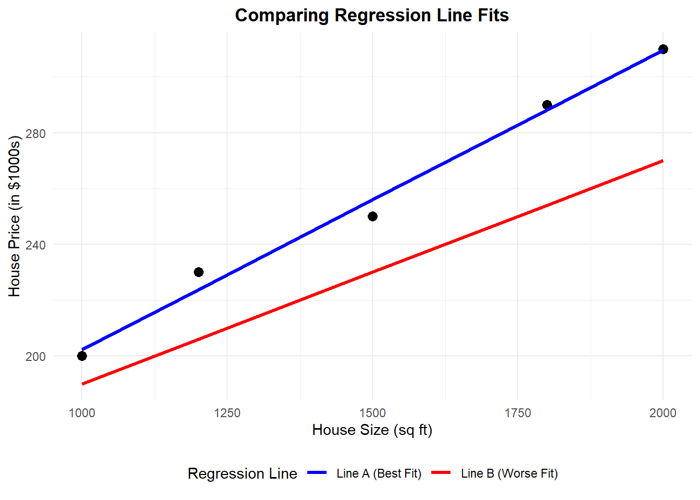
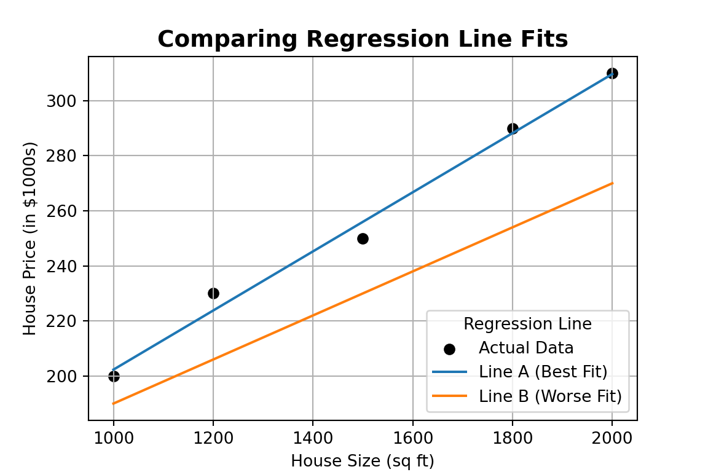
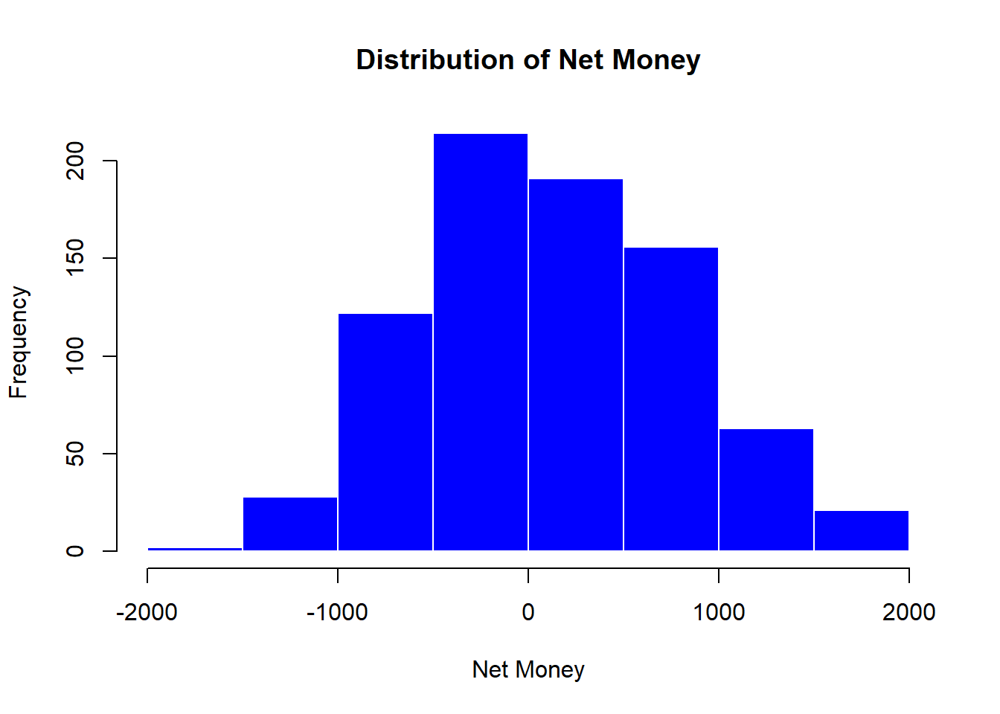

mindmap
root((Regression
Analysis)
Continuous <br/>Outcome Y
{{Unbounded <br/>Outcome Y}}
)Chapter 3: <br/>Ordinary <br/>Least Squares <br/>Regression(
(Normal <br/>Outcome Y)
{{Nonnegative <br/>Outcome Y}}
)Chapter 4: <br/>Gamma Regression(
(Gamma <br/>Outcome Y)
{{Bounded <br/>Outcome Y <br/> between 0 and 1}}
)Chapter 5: Beta <br/>Regression(
(Beta <br/>Outcome Y)
{{Nonnegative <br/>Survival <br/>Time Y}}
)Chapter 6: <br/>Parametric <br/> Survival <br/>Regression(
(Exponential <br/>Outcome Y)
(Weibull <br/>Outcome Y)
(Lognormal <br/>Outcome Y)
)Chapter 7: <br/>Semiparametric <br/>Survival <br/>Regression(
(Cox Proportional <br/>Hazards Model)
(Hazard Function <br/>Outcome Y)
Discrete <br/>Outcome Y
{{Binary <br/>Outcome Y}}
{{Ungrouped <br/>Data}}
)Chapter 8: <br/>Binary Logistic <br/>Regression(
(Bernoulli <br/>Outcome Y)
Binary Logistic Regression
Learning Objectives
By the end of this chapter, you will be able to:
- Explain how Binary Logistic Regression models the probability of a binary outcome using log-odds.
- Describe why Ordinary Least Squares is not appropriate for binary outcomes, and how the logistic function addresses this.
- Fit a binary logistic regression model in both
RandPython. - Interpret log-odds, odds ratios, and predicted probabilities in real-world contexts.
- Evaluate model fit using metrics such as accuracy, confusion matrices, and ROC curves.
- Identify when binary logistic regression is the appropriate tool, and understand its limitations.
8.1 Introduction
In many real-world problems, the outcome we’re trying to predict is not a number — it’s a yes or no, success or failure, clicked or didn’t click. For example:
- Will a student default on a loan given their credit score and income?
- Will a student pass a course based on whether they have a part-time job and how many hours they studied?
- Will a student likely graduate within 4 years, based on their academic record and declared major?
These outcomes are binary: they can take on only two possible values, typically coded as 1 (event occurs) and 0 (event does not occur).
To model such outcomes, we need a regression approach that produces predicted probabilities between 0 and 1 — not arbitrary numbers on the real line. This is where Binary Logistic Regression comes in.
In this chapter, we’ll see how logistic regression:
- Links input variables to the log-odds of the outcome,
- Produces interpretable coefficients (like odds ratios), and
- Helps us make informed predictions in binary classification problems.
8.2 Why Ordinary Least Squares Fails for Binary Outcomes
To understand the need for logistic regression, consider applying Ordinary Least Squares (OLS) to a binary outcome.
Suppose we are trying to predict whether a student defaulted on a loan (1) or did not default (0) using a continuous predictor like credit_score.
In this chapter we use the BLR (Binary Logistic Regression) dataset, which contains student-level information such as credit score, income, and other demographic/financial variables. Our outcome of interest is defaulted, a binary indicator where 1 means the student defaulted on a loan and 0 means they did not. We’ll start with a single predictor (credit_score) to illustrate the core ideas, then later extend to multiple predictors.
Before diving into the technical reasons why OLS is inappropriate for binary outcomes, let’s look at a simplified version of the dataset we’ll use throughout this chapter:
# Prepare data: numeric default variable and select predictor
blr_data <- BLR %>%
select(credit_score, defaulted) %>%
mutate(defaulted = as.numeric(defaulted))Below is a sample of this dataset:
| credit_score | income | education_years | married | owns_home | age | defaulted | successes | trials |
|---|---|---|---|---|---|---|---|---|
| 850 | 154100 | 16 | 0 | 1 | 56 | 0 | 7 | 10 |
| 606 | 34100 | 13 | 1 | 0 | 31 | 0 | 7 | 10 |
| 846 | 73000 | 17 | 0 | 0 | 50 | 0 | 7 | 10 |
| 702 | 41300 | 13 | 0 | 0 | 41 | 1 | 5 | 10 |
| 843 | 50800 | 16 | 1 | 1 | 45 | 0 | 7 | 10 |
| 610 | 33400 | 12 | 0 | 0 | 25 | 1 | 3 | 10 |
| 572 | 24600 | 11 | 0 | 0 | 28 | 1 | 3 | 10 |
| 795 | 57700 | 16 | 1 | 1 | 40 | 0 | 7 | 10 |
| 796 | 37100 | 13 | 1 | 0 | 50 | 0 | 8 | 10 |
| 690 | 72300 | 14 | 0 | 0 | 38 | 0 | 8 | 10 |
Now, let’s narrow in on the key variables of interest for this section.
| credit_score | defaulted |
|---|---|
| 850 | 0 |
| 606 | 0 |
| 846 | 0 |
| 702 | 1 |
| 843 | 0 |
| 610 | 1 |
| 572 | 1 |
| 795 | 0 |
| 796 | 0 |
| 690 | 0 |
This dataset allows us to examine whether a student defaulted on a loan (defaulted = 1) based on their credit_score. It’s a classic binary outcome: a “yes” or “no” event.
If we use OLS, we estimate:
\[ \mathbb{E}(Y_i \mid X_i) = \pi_i = \beta_0 + \beta_1 X_i \]
This means we’re treating the probability of default (\(\pi_i\)) as a linear function of credit score.
However, there are two fundamental issues with using OLS here:
- The linear model can produce predicted values less than 0 or greater than 1 — which doesn’t make sense when modeling a probability.
- OLS assumes constant variance of the residuals, but binary outcomes inherently violate this assumption, because their variance depends on the mean:
\[ \text{Var}(Y_i) = \pi_i(1 - \pi_i) \]
To see this issue in action, let’s try fitting an OLS regression model using our binary outcome and a continuous predictor. While OLS is designed to minimize squared error, it doesn’t account for the discrete nature of the response — which means it can return predicted probabilities below 0 or above 1. In the example below, we use a customer’s credit score to predict the probability of default, and you’ll see how the linear model fails to respect the fundamental constraints of probability.

These limitations make OLS unsuitable for modeling a binary outcome as a probability.
To properly model the probability of the event (here, default), we need a method that:
- Produces predictions strictly between 0 and 1,
- Accounts for the fact that the variance depends on the mean, and
- Connects our predictors to the probability of the event in a way that is easy to interpret.
The key idea is to transform the probability so that it can be modeled as a linear function without breaking these rules.
In the next section, we’ll see how the logit transformation does exactly that.
# ⚠️ This OLS fit is not appropriate for binary outcomes.
# We include it here only to illustrate why logistic regression is needed.
# Load necessary libraries
library(ggplot2)
library(dplyr)
# Prepare data: numeric default variable and select predictor
blr_data <- BLR %>%
select(credit_score, defaulted) %>%
mutate(defaulted = as.numeric(defaulted))
# Fit an OLS model (not ideal for binary outcome)
ols_model <- lm(defaulted ~ credit_score, data = blr_data)
# Add predicted values
blr_data$predicted <- predict(ols_model, newdata = blr_data)
# Plot actual data and OLS-fitted line
plot <- ggplot(blr_data, aes(x = credit_score, y = defaulted)) +
geom_jitter(height = 0.05, width = 0, alpha = 0.4, color = "black") +
geom_line(aes(y = predicted), color = "blue", linewidth = 1.2) +
labs(
title = "OLS Fitted Line on Binary Data",
x = "Credit Score",
y = "Predicted Probability of Default"
) +
coord_cartesian(ylim = c(-0.2, 1.2)) +
theme_minimal() +
theme(plot.title = element_text(hjust = 0.5, face = "bold"))
plot# ⚠️ This OLS fit is not appropriate for binary outcomes.
# We include it here only to illustrate why logistic regression is needed.
import pandas as pd
import numpy as np
import matplotlib.pyplot as plt
import statsmodels.api as sm
# Extract relevant columns from the BLR dataset
blr = r.data['BLR']
df = blr[['credit_score', 'defaulted']].copy()
df['defaulted'] = df['defaulted'].astype(int)
# Fit an OLS model
X = sm.add_constant(df['credit_score'])
model = sm.OLS(df['defaulted'], X).fit()
df['predicted'] = model.predict(X)
# Plot the actual binary outcomes and OLS predictions
fig, ax = plt.subplots(figsize=(6, 4))
ax.scatter(df['credit_score'], df['defaulted'], alpha=0.4, color='black', label='Actual Data', s=20)
ax.plot(df['credit_score'], df['predicted'], color='blue', label='OLS Fit', linewidth=2)
ax.set_title("OLS Fitted Line on Binary Data", fontsize=14, fontweight='bold')
ax.set_xlabel("Credit Score")
ax.set_ylabel("Predicted Probability of Default")
ax.set_ylim(-0.2, 1.2)
ax.legend()
plt.grid(True)
plt.tight_layout()
plt.show()
(-0.3, 1.2)
8.3 The Logit Function
In Section 8.2, we saw that modeling probability directly with a linear equation can produce impossible values (less than 0 or greater than 1) and ignores the way variance changes with the mean.
The fix is to apply a transformation that:
- Expands the (0, 1) probability range to the entire real line,
- Is reversible, so we can convert back to probabilities, and
- Preserves the ordering of probabilities.
One transformation that checks all these boxes is the logit function.
8.3.1 Logit: A Link Between Probability and Linear Predictors
The logit function transforms the probability \(\pi_i\) into a value on the entire real line: \[ \text{logit}(\pi_i) = \log\!\left(\frac{\pi_i}{1 - \pi_i}\right) = \beta_0 + \beta_1 X_i \]
This transformation:
- Is monotonic (it preserves order),
- Maps probabilities \(\pi_i \in (0, 1)\) to \((-\infty, \infty)\), and
- Solves the range issue of OLS by letting us fit a linear model in the transformed space.
By modeling the log-odds as a linear function of predictors and then inverting the transformation, we obtain valid predicted probabilities that remain within \([0,1]\).
Note
The logit function is defined as: \[ \text{logit}(\pi_i) = \log\!\left(\frac{\pi_i}{1 - \pi_i}\right) \] It models the log-odds of the outcome as a linear function of predictors.
8.3.2 From Log-Odds Back to Probability
While the model calculates linearly on the log-odds scale, we ultimately want to understand the probability of the outcome (\(\pi_i\)). To do this, we invert the logit function.
The inverse of the logit is the Sigmoid function (also called the logistic function):
\[ \pi_i = \frac{1}{1 + e^{-(\beta_0 + \beta_1 X_i)}} \]
This function takes our linear prediction (\(\beta_0 + \beta_1 X_i\)), which can range from \(-\infty\) to \(+\infty\), and “squashes” it into the range \((0, 1)\). This mathematical trick ensures that no matter how extreme our predictor values get, our predicted probability never exceeds 1 or drops below 0.

8.3.3 Understanding the “S” Shape
The sigmoid function is not just a boundary enforcer; it fundamentally changes how we interpret the relationship between \(X\) and \(Y\). Unlike a straight line, the sigmoid curve is non-linear.
1. The Steep Middle (High Sensitivity) When the probability is near 0.5 (the “tipping point”), the curve is steepest. This means that small changes in the predictor \(X\) result in large changes in the probability \(\pi_i\).
- Context: If a borrower is borderline (e.g., 50/50 chance of default), a small improvement in their credit score can drastically reduce their default risk.
2. The Flat Tails (Diminishing Returns) As the probability approaches 0 or 1, the curve flattens out (asymptotes). In these regions, even large changes in \(X\) result in tiny changes in \(\pi_i\).
- Context: If a borrower has a near-perfect credit score (risk \(\approx 0.01\%\)), increasing their score further makes almost no difference to their probability of default. The model recognizes that they are already “maxed out” on safety.
This captures a realistic property of many binary outcomes: interventions are most effective when the outcome is uncertain.
This transformation lets us use a linear predictor on the log-odds scale and then recover valid probabilities.
This idea forms the basis of binary logistic regression, introduced next.
Visualizing the Difference
In OLS (linear regression), the slope \(\,\beta_1\,\) is a constant change in the mean response: \[ \mathbb{E}[Y \mid x+1] - \mathbb{E}[Y \mid x] = \beta_1. \]
In logistic regression, the relationship is linear on the log-odds (logit) scale: \[ \log\!\left(\frac{\pi(x)}{1-\pi(x)}\right)=\beta_0+\beta_1 x. \] So \(\beta_1\) is still a constant slope—but it is constant in log-odds: a one-unit increase in \(x\) adds \(\beta_1\) to the log-odds (equivalently, it multiplies the odds by \(e^{\beta_1}\)), holding other predictors fixed.
What isn’t constant is the change in probability. The marginal effect on probability depends on \(\pi(x)\): \[ \frac{d\pi(x)}{dx}=\beta_1\,\pi(x)\big(1-\pi(x)\big), \] which is largest near \(\pi(x)=0.5\) and shrinks as \(\pi(x)\) approaches 0 or 1.
8.3.4 The Logistic Function and Its Shape (Code)
The following plot illustrates this behavior. Notice how the linear model (red dashed line) marches blindly past 0 and 1, while the logistic model (blue solid line) respects the boundaries and shows the characteristic “S” shape.
# Logistic vs Linear fit demo
set.seed(1)
# Grid of linear predictor values (η)
eta <- seq(-4, 4, length.out = 400)
# Logistic sigmoid: π(η)
pi <- 1 / (1 + exp(-eta))
# Naive linear "probability" for comparison
# passes through (0, 0.5) with moderate slope
p_lin <- 0.5 + 0.25 * eta
df <- data.frame(
eta = eta,
sigmoid = pi,
linear = p_lin
)
library(ggplot2)
ggplot(df, aes(x = eta)) +
# Logistic S-curve
geom_line(aes(y = sigmoid), linewidth = 1.4, color = "steelblue") +
# Naive linear line
geom_line(aes(y = linear), linewidth = 1.1, linetype = "dashed",
color = "#E74C3C") +
# Vertical marker for steepest change near π ≈ 0.5
geom_segment(aes(x = 0, xend = 0,
y = plogis(-0.7), yend = plogis(0.7)),
colour = "gray40", linewidth = 0.7) +
annotate("text", x = 0.7, y = 0.55,
label = "Steepest change\nat π ≈ 0.5",
size = 3.5, hjust = 0, color = "gray30") +
coord_cartesian(ylim = c(0, 1)) +
scale_y_continuous(breaks = seq(0, 1, by = 0.25)) +
labs(
x = "Linear predictor (η = β0 + β1 X)",
y = "Probability (π)",
title = "The Sigmoid 'S-Curve' vs. Linear Fit",
subtitle = "Logistic regression captures diminishing returns at the extremes",
caption = "Blue: Logistic Sigmoid (Valid Probabilities). Red: Naive Linear (Violates Bounds)."
) +
theme_minimal(base_size = 12) +
theme(
plot.title = element_text(hjust = 0.5, face = "bold", size = 14),
plot.subtitle = element_text(hjust = 0.5, size = 11, colour = "gray40")
)import numpy as np
import matplotlib.pyplot as plt
from scipy.special import expit # logistic / sigmoid
np.random.seed(1)
# Grid of linear predictor values (η)
eta = np.linspace(-4, 4, 400)
# Logistic sigmoid π(η)
pi = expit(eta)
# Naive linear "probability" (same as R: 0.5 + 0.25η)
p_lin = 0.5 + 0.25 * eta
plt.figure(figsize=(8, 5))
# Logistic S-curve
plt.plot(eta, pi, label="Logistic Sigmoid (Valid $\pi$)",
linewidth=2.0, color="steelblue")
# Naive linear line
plt.plot(eta, p_lin, "--", label="Naive Linear (Violates Bounds)",
linewidth=1.5, color="#E74C3C")
# Vertical marker around steepest change near π ≈ 0.5
y_lo, y_hi = expit(-0.7), expit(0.7)
plt.plot([0, 0], [y_lo, y_hi], color="gray40", linewidth=1.0)
plt.text(0.7, 0.55, "Steepest change\nat $\pi \\approx 0.5$",
fontsize=10, color="gray30", ha="left", va="center")
plt.ylim(0, 1)
plt.yticks(np.arange(0, 1.01, 0.25))
plt.xlabel(r"Linear predictor ($\eta = \beta_0 + \beta_1 X$)")
plt.ylabel(r"Probability ($\pi$)")
plt.title("The Sigmoid 'S-Curve' vs. Linear Fit")
plt.grid(True, alpha=0.3)
plt.legend(loc="lower right")
plt.tight_layout()
plt.show()
8.4 Case Study: Understanding Financial Behaviors
Statistical models are most useful when they connect to a real-world problem. In this case study, we use binary logistic regression to model default risk—the probability that a student defaults on a loan.
8.4.1 Case Study Setup: Data + Goal
We’ll use the Logistic_Regression dataset (packaged in cookbook). The outcome is:
-
defaulted(binary:1 = default,0 = no default)
and we model the probability of default for each student, \(\pi_i = P(Y_i = 1 \mid \mathbf{x}_i)\), using a mix of predictors such as:
-
credit_score(numeric; higher typically means lower risk) -
income(numeric; annual income) -
age(numeric) -
loan_amount(numeric) -
student(categorical: yes/no)
Banks and lenders face a practical question:
Given a customer’s financial history, how risky is this loan?
Even though the final decision is “approve” or “deny,” the key modeling goal is to estimate a probability of default (risk). That probability can later be converted into a decision using a chosen threshold (e.g., “approve only if \(\hat{\pi}_i < 0.10\)”).
Why probability matters: asymmetric costs
Errors are not equally costly:
-
False positive: predict default, but the customer would have paid.
Cost: opportunity cost (lost interest). -
False negative: predict safe, but the customer defaults.
Cost: potential loss of principal (and associated costs).
Because false negatives are often more expensive, we care about a calibrated probability \(\hat{\pi}_i\), not just a yes/no label.
8.4.2 Study Design and Data Prep
Before fitting the model, we set up the analysis and prepare the data.
Study design (high-level)
- Predictors: a mix of continuous and categorical variables.
-
Outcome: binary (
defaulted). -
Assumptions / modelling requirements:
- Independence: observations are (approximately) independent.
- Linearity in the log-odds: predictors relate linearly to the log-odds of default.
- No perfect multicollinearity (identifiability): predictors must not be perfectly redundant (e.g., one column is an exact linear combination of others), so coefficients are uniquely estimable.
Data preparation steps
We’ll do three practical steps that help ensure fair evaluation and stable estimation:
- Check class balance. If defaults are rare, accuracy alone can be misleading.
- Split into training/testing sets to evaluate generalization and reduce overfitting.
- Stratify the split so the default rate is similar in both sets.
Influential points and outliers
All regression-style models can be influenced by unusual observations. In logistic regression, the most important cases are often high-leverage points (unusual predictor values) and situations close to separation (predictors almost perfectly predict the outcome), both of which can strongly affect the fitted probabilities.
Before modeling, it’s worth checking for:
- Data entry errors (impossible values).
- Extreme leverage points (legitimate but unusually large/small predictor values that may disproportionately influence the fit).
8.4.3 Data Preparation in Action
Below, we check the default rate and create a stratified train/test split.
library(rsample) # Part of tidymodels for splitting
library(dplyr)
# 1. Check Class Imbalance
# Notice if defaults are rare (e.g., < 10%)
prop.table(table(BLR$defaulted))
# 2. Stratified Split
# We use 'strata = defaulted' to ensure both sets have the same % of defaults
set.seed(123)
split <- initial_split(BLR, prop = 0.70, strata = defaulted)
train_data <- training(split)
test_data <- testing(split)
# 3. Verify the split
nrow(train_data)
nrow(test_data)import pandas as pd
from sklearn.model_selection import train_test_split
# 1. Check Class Imbalance
print(df['defaulted'].value_counts(normalize=True))
# 2. Stratified Split
# We use 'stratify=y' to ensure both sets have the same % of defaults
X = df.drop(columns=['defaulted'])
y = df['defaulted']
X_train, X_test, y_train, y_test = train_test_split(
X, y,
test_size=0.3,
random_state=123,
stratify=y # Crucial for imbalanced data
)
# 3. Verify the split
print(f"Training set shape: {X_train.shape}")
print(f"Testing set shape: {X_test.shape}")8.5 Fitting the Binary Logistic Regression Model
Now that we’ve prepared the data, we fit the model. Our goal is to estimate the unknown parameters (\(\beta\)) that link our predictors (like credit_score) to the probability of default.
8.5.1 Model Specification
We define the relationship between the predictors and the probability of default \(\pi_i\) as:
\[ \log\!\left(\frac{\pi_i}{1 - \pi_i}\right) = \beta_0 + \beta_1\,\text{credit\_score}_i + \beta_2\,\text{income}_i + \dots + \beta_k X_{ki} \]
Here is what the parameters entail:
- \(\pi_i\): The probability that the \(i\)-th student defaults.
- \(\beta_0\) (The Intercept): The log-odds of default when all predictors are zero (often outside the meaningful range of the data, so mainly a baseline reference).
-
\(\beta_1, \dots, \beta_k\) (The Slopes): For a one-unit increase in the corresponding predictor \(X_j\) (e.g.,
credit_scoreorincome), \(\beta_j\) is the change in the log-odds of default, holding all other predictors fixed. Equivalently, the odds are multiplied by \(e^{\beta_j}\).
8.5.2 Fitting the Model
To estimate these \(\beta\) parameters, we use Maximum Likelihood Estimation (MLE).
In R, we use the glm() function (Generalized Linear Model). Crucially, we must specify family = binomial.
Why
family = binomial? Standard regression (OLS) assumes the target variable follows a Normal (Gaussian) distribution. However, our target is binary (0/1), which follows a Bernoulli/Binomial distribution. This argument tells the software to switch from “Least Squares” to “Maximum Likelihood” using the binomial distribution.Why Logit? By default,
family = binomialuses the logit link function. While other links exist (like probit), the logit is preferred for its interpretability (odds ratios) and mathematical properties.
import statsmodels.api as sm
# 1. Define Predictors (X) and Target (y)
# Note: We access the R dataframe 'BLR' using 'r.BLR'
df = r.BLR
X = df[['credit_score', 'income', 'age', 'loan_amount', 'student']]
y = df['defaulted']
# 2. Add Intercept manually (Statsmodels does not add it by default)
X = sm.add_constant(X)
# 3. Fit the Logit model
model = sm.Logit(y, X).fit()
print(model.summary())8.5.3 Model Output Interpretation
The output table provides the Estimate (the \(\beta\) coefficients) for each predictor.
- Positive Coefficient (+): As this variable increases, the log-odds of default increase (Higher Risk).
- Negative Coefficient (-): As this variable increases, the log-odds of default decrease (Lower Risk).
In the next section, we will convert these raw log-odds into Odds Ratios, which are much easier to interpret for business decisions.
8.6 Interpreting Model Results: Log-Odds and Odds Ratios
In the previous section, we fit a model with several predictors. To clearly demonstrate how to interpret the coefficients, let’s focus on a simplified model using just two key variables: credit_score and income.
8.6.1 The “Log-Odds” Output
By default, logistic regression software reports coefficients \(\hat{\beta}\) on the log-odds (logit) scale. In other words, the model is linear in the quantity \[ \log\!\left(\frac{\pi_i}{1-\pi_i}\right), \] not directly in \(\pi_i\). This is why the printed coefficients can feel unintuitive: a change like \(\hat{\beta}=-0.004\) is a change in log-odds, not a direct “percent change in probability.”
Practically: - In R, these values appear in the estimate column. - In Python (statsmodels), they appear in the coef (or params) output.
A good mental model is: each coefficient tells you how the log-odds move when that predictor increases by one unit, holding the other predictors fixed.
8.6.2 From Log-Odds to Odds Ratios
To make coefficients easier to interpret, we often exponentiate them to get odds ratios (ORs): \[ \text{OR}_j = e^{\hat{\beta}_j}. \] Exponentiation converts “additive changes in log-odds” into “multiplicative changes in odds.”
- If \(\text{OR}_j > 1\), then increasing \(X_j\) is associated with higher odds of the event (\(Y=1\)), holding other predictors fixed.
- If \(\text{OR}_j < 1\), then increasing \(X_j\) is associated with lower odds of the event.
- If \(\text{OR}_j = 1\), then there is no change in odds associated with \(X_j\) (at least in this fitted model).
Importantly, the OR interpretation is always “per one-unit increase in the corresponding predictor.” If the unit is very small (like $1 of income), the OR can look like 1.0000 even when the effect is real.
8.6.3 A Simplified Model for Interpretation
To demonstrate coefficient interpretation clearly, we focus on a simplified model using two predictors: credit_score and income: \[
\log\!\left(\frac{\pi_i}{1-\pi_i}\right)
= \beta_0 + \beta_1\,\texttt{credit\_score}_i + \beta_2\,\texttt{income}_i.
\] Here, \(\beta_1\) is the log-odds change associated with a one-point increase in credit score (holding income fixed), and \(\beta_2\) is the log-odds change associated with a one-dollar increase in income (holding credit score fixed).
Below, we fit the simplified model and compute odds ratios with 95% confidence intervals.
# Fit a simplified model for clear interpretation
fit_simple <- glm(
defaulted ~ credit_score + income,
data = BLR,
family = binomial(link = "logit")
)
# We use broom::tidy to easily extract coefficients
library(broom)
coef_table <- tidy(fit_simple)
# Calculate Wald confidence intervals (more stable than profile likelihood)
ci <- confint.default(fit_simple, level = 0.95)
coef_table$conf.low <- ci[, 1]
coef_table$conf.high <- ci[, 2]
# Calculate Odds Ratios (OR) by exponentiating estimates and CIs
coef_table$odds_ratio <- exp(coef_table$estimate)
coef_table$or_low <- exp(coef_table$conf.low)
coef_table$or_high <- exp(coef_table$conf.high)
# Display the table
knitr::kable(
coef_table[, c("term","estimate","std.error","p.value","odds_ratio","or_low","or_high")],
digits = 4,
col.names = c("Term","Log-Odds (β)","SE","p","Odds Ratio","OR 2.5%","OR 97.5%")
)import pandas as pd
import statsmodels.api as sm
import numpy as np
# Access the data from R
df = r.BLR
X = sm.add_constant(df[['credit_score', 'income']])
y = df['defaulted']
# Fit the simplified model
logit_model = sm.Logit(y, X).fit(disp=False)
# 1. Extract Parameters (Log-Odds)
params = logit_model.params
conf = logit_model.conf_int()
# 2. Calculate Odds Ratios (OR)
# We exponentiate the log-odds to get the OR
odds_ratios = np.exp(params)
conf_or = np.exp(conf)
# 3. Create a clean summary table
results_table = pd.DataFrame({
"Log-Odds (β)": params,
"p-value": logit_model.pvalues,
"Odds Ratio": odds_ratios,
"OR 2.5%": conf_or[0],
"OR 97.5%": conf_or[1]
})
print(results_table.round(4))Interpretation of the Output
- Intercept: usually ignored in interpretation.
-
credit_score: If the coefficient is \(\beta \approx -0.01\), then \(\text{OR} \approx 0.99\).
- Meaning: For every 1-point increase in credit score, the odds of default are multiplied by 0.99 (a ~1% decrease), holding income constant.
- income: If the \(\text{OR} \approx 1.00\), the effect per dollar is tiny. In such cases, it is often useful to rescale the variable (e.g., income in $10k units) to see a meaningful effect size.
8.7 From Log-Odds to Probabilities (Simple Model)
To fully understand how the model converts abstract “log-odds” into a tangible “probability,” it is best to start with the simplest case: one predictor.
In a simple binary logistic regression, the relationship is:
\[ \hat{\pi} = \frac{1}{1 + e^{-(\hat{\beta}_0 + \hat{\beta}_1 X)}} \]
Below, we fit a model using only credit_score to predict default. We will then calculate the predicted probability (\(\hat{\pi}\)) for a student with a Low, Median, and High credit score.
# 1. Fit a Simple Model (1 Predictor)
fit_simple <- glm(defaulted ~ credit_score, data = BLR, family = binomial)
# 2. Define Scenarios: Low, Median, and High Credit Score
# We pick the 25th, 50th, and 75th percentiles
qs <- quantile(BLR$credit_score, probs = c(0.25, 0.5, 0.75), na.rm = TRUE)
scenarios <- data.frame(
scenario = c("Low (25th %)", "Median (50th %)", "High (75th %)"),
credit_score = as.numeric(qs)
)
# 3. Calculate Linear Predictor (Log-Odds) and Probability
# type = "link" gives log-odds (eta)
# type = "response" gives probability (pi)
scenarios$log_odds <- predict(fit_simple, newdata = scenarios, type = "link")
scenarios$prob_pi <- predict(fit_simple, newdata = scenarios, type = "response")
# Display Results
knitr::kable(
scenarios,
digits = 3,
col.names = c("Scenario", "Credit Score", "Log-Odds (η)", "Probability (π)")
)import pandas as pd
import statsmodels.api as sm
import numpy as np
# 1. Fit a Simple Model (1 Predictor)
# We define X with only credit_score
X_simple = sm.add_constant(df[['credit_score']])
y = df['defaulted']
model_simple = sm.Logit(y, X_simple).fit(disp=0)
# 2. Define Scenarios
qs = df['credit_score'].quantile([0.25, 0.5, 0.75]).values
scenarios = pd.DataFrame({
'const': 1.0,
'credit_score': qs
}, index=["Low (25th %)", "Median (50th %)", "High (75th %)"])
# 3. Calculate Linear Predictor and Probability manually
# eta = beta0 + beta1 * score
eta = np.dot(scenarios, model_simple.params)
# pi = 1 / (1 + e^-eta)
pi = 1 / (1 + np.exp(-eta))
# Display Results
results = pd.DataFrame({
"Credit Score": scenarios['credit_score'],
"Log-Odds (η)": eta,
"Probability (π)": pi
})
print(results.round(3))Interpretation
- At Low Credit Score: The log-odds are likely positive (or less negative), resulting in a higher probability (\(\pi\)) of default.
- At High Credit Score: The log-odds become strongly negative. Because of the exponent in the denominator (\(e^{-\text{negative}}\) is large), the probability \(\pi\) shrinks toward 0.
This demonstrates the inverse relationship: as credit score goes up, the probability of default goes down, following the S-curve shape we saw earlier.
Next Steps: Now that we understand the mechanics of the simple model, we can expand our view. Real-world problems are rarely caused by a single factor. In the following sections, we will add more variables (like income and student status) to build a multiple logistic regression model.
8.8 Data Preparation and Wrangling
Before we can train a model, we must bridge the gap between how data is collected and how a regression model consumes it. Raw data is often messy, incomplete, or stored in text formats that mathematical algorithms cannot process.
Data wrangling ensures our inputs are reliable (free of errors), complete (no missing values), and structured (numerical matrices). Without this step, even the most sophisticated algorithm will fail—a principle known as “Garbage In, Garbage Out.”
8.8.1 Handling Missing Data
Real-world datasets frequently have gaps—a borrower might leave the “Income” field blank. Logistic regression requires a complete set of observations; it cannot calculate a coefficient for a “blank” space.
We must first check the extent of the problem. If only a few rows have missing data, we typically remove them.
Strategies for Missing Values
When data is missing, you have three main options:
- Deletion (Complete Case Analysis): If missingness is rare (<5% of data) and random, simply remove those rows. This is the most common approach in introductory texts.
- Imputation: Replace missing values with the mean, median, or a value predicted by other variables. This preserves sample size but adds complexity.
-
Flagging: Create a new binary variable (e.g.,
income_missing = 1) to model the missingness explicitly.
8.8.2 Encoding Categorical Variables
Logistic regression works with matrices of numbers. It cannot mathematically multiply a coefficient \(\beta\) by the text string “Married.”
To fix this, we perform One-Hot Encoding (or Dummy Encoding). This converts a categorical variable into a binary 0/1 flag.
-
Original:
student = "Yes" -
Encoded:
student_yes = 1
Note on the “Dummy Variable Trap” (Intercept + both levels).
If student has two categories (Yes/No), a common encoding is to create two indicators: student_yes and student_no. However, if your model includes an intercept (which is the default in both R and Python), you must not include indicators for all categories. Why? Because for every row, \[
\text{student\_yes} + \text{student\_no} = 1,
\] and the intercept column is also a column of ones. That means one column can be written as an exact linear combination of the others (perfect multicollinearity), so the design matrix is not full rank.
In practice, we avoid this by choosing a reference level and dropping one indicator. The effect of the reference level is absorbed into the intercept, and the remaining coefficient(s) are interpreted relative to that reference group. For example, if “No” is the reference, then the coefficient on student_yes compares students to non-students, holding other predictors fixed.
8.8.3 Splitting the Data
Finally, as discussed in the study design, we split our clean, encoded dataset into training and testing sets to evaluate performance fairly.
library(dplyr)
library(rsample)
# 1. Handling Missing Data
# We check for NAs and, for this chapter, remove incomplete rows
sum(is.na(BLR))
BLR_clean <- na.omit(BLR)
# 2. Encoding
# R handles factor encoding automatically in glm(),
# but it is good practice to ensure variables are factors.
BLR_clean <- BLR_clean %>%
mutate(
student = as.factor(student),
married = as.factor(married),
owns_home = as.factor(owns_home)
)
# 3. Splitting (Stratified to handle class imbalance)
set.seed(123)
split <- initial_split(BLR_clean, prop = 0.7, strata = defaulted)
train_data <- training(split)
test_data <- testing(split)import pandas as pd
from sklearn.model_selection import train_test_split
# 1. Handling Missing Data
# Drop rows with any missing values
df_clean = df.dropna().copy()
# 2. Encoding Categorical Variables
# We use pd.get_dummies to convert text categories to 0s and 1s.
# drop_first=True prevents the "Dummy Variable Trap" (e.g., keeps 'student_Yes', drops 'student_No')
df_clean = pd.get_dummies(df_clean, columns=['student', 'married', 'owns_home'], drop_first=True)
# Display the new columns to verify
print(df_clean.head())
# 3. Splitting (Stratified)
X = df_clean.drop(columns=['defaulted'])
y = df_clean['defaulted']
X_train, X_test, y_train, y_test = train_test_split(
X, y, test_size=0.3, random_state=123, stratify=y
)8.9 Exploratory Data Analysis (EDA)
Before fitting a logistic regression, we need to understand the structure of our data. Exploratory analysis helps us spot patterns, distributions, and potential issues.
8.9.1 Classifying Variables
To select the appropriate modeling technique, we must first classify our variables. In this analysis, defaulted is our binary outcome, and the remaining variables serve as regressors (explanatory variables).
| Variable | Type | Role | Description |
|---|---|---|---|
defaulted |
Categorical (Binary) | Outcome (\(Y\)) | \(1=\) Default, \(0=\) No Default |
credit_score |
Continuous (Integer) | Regressor (\(X\)) | Credit rating (300-850) |
income |
Continuous | Regressor (\(X\)) | Annual income in CAD |
age |
Continuous (Integer) | Regressor (\(X\)) | Borrower age in years |
loan_amount |
Continuous | Regressor (\(X\)) | Size of loan in CAD |
education_years |
Count / Discrete | Regressor (\(X\)) | Years of schooling |
married |
Categorical (Nominal) | Regressor (\(X\)) | Marital status |
owns_home |
Categorical (Nominal) | Regressor (\(X\)) | Home ownership status |
8.9.2 Visualizing Distributions
-
Continuous regressors (e.g.,
credit_score,income) can be visualized with histograms or density plots, split by default status. -
Categorical regressors (e.g.,
married,owns_home) can be compared with barplots of default rates.
8.9.3 Exploring Relationships with Binary Outcome
Boxplots or violin plots of credit_score by default status, or barplots of default rates by home ownership, help reveal potential relationships. We also check correlations among continuous regressors to watch for multicollinearity.
library(ggplot2)
library(ggcorrplot)
# Boxplot of credit score by default
ggplot(BLR, aes(x = as.factor(defaulted), y = credit_score)) +
geom_boxplot() +
labs(x = "Defaulted", y = "Credit Score",
title = "Credit Score Distribution by Default Status")
# Barplot of default by home ownership
ggplot(BLR, aes(x = as.factor(owns_home), fill = as.factor(defaulted))) +
geom_bar(position = "fill") +
labs(x = "Owns Home", y = "Proportion",
fill = "Defaulted",
title = "Default Rates by Home Ownership")
# Correlation heatmap (Numeric regressors only)
corr <- cor(BLR[,c("credit_score","income","education_years","age")])
ggcorrplot(corr, lab = TRUE)import seaborn as sns
import matplotlib.pyplot as plt
# Boxplot credit score by default
sns.boxplot(data=df, x="defaulted", y="credit_score")
plt.title("Credit Score Distribution by Default Status")
plt.show()
# Barplot default by home ownership
sns.barplot(data=df, x="owns_home", y="defaulted", errorbar=None)
plt.title("Default Rates by Home Ownership")
plt.show()
# Correlation heatmap
corr = df[['credit_score','income','education_years','age']].corr()
sns.heatmap(corr, annot=True, cmap="coolwarm")
plt.title("Correlation Heatmap of Continuous Regressors")
plt.show()8.9.4 What the Correlation Plot Tells Us (and What It Doesn’t)
A correlation plot is a quick way to understand which predictors move together and whether any variables might be partially redundant. Here are the main takeaways we look for:
- Redundant predictors (multicollinearity risk): If two predictors are very strongly correlated (near \(|r|=1\)), they carry similar information. Including both can make coefficient estimates less stable (larger standard errors), which can make interpretation harder even if predictions remain decent.
-
Expected directions and plausibility: Some relationships should match intuition (e.g., higher
credit_scoretypically associated with lower default risk). If a relationship looks surprising, it can be a sign to double-check coding, units, or data quality. - Model-building guidance (not a rule): Correlation is not a “keep/drop” rule by itself. Logistic regression uses conditional relationships (each coefficient is “holding others fixed”), so a variable can have weak marginal correlation and still be important once other predictors are included.
Finally, remember that correlation does not establish causality, and it does not capture non-linear relationships. We use this plot as a diagnostic for feature relationships and potential modeling issues—not as a conclusion about what “causes” default.
8.10 Data Modelling
With EDA complete, we’re ready to specify a logistic regression model. The outcome is binary (defaulted \(\in \{0,1\}\)), so instead of predicting \(Y_i\) directly, we model the probability of default \(\pi_i = P(Y_i=1\mid \mathbf{x}_i)\).
8.10.1 Model setup: distribution + link
In logistic regression we assume: \[ Y_i \sim \text{Bernoulli}(\pi_i), \] meaning each observation is a “yes/no” outcome with success probability \(\pi_i\).
We connect predictors to \(\pi_i\) through the logit link: \[ \log\!\left(\frac{\pi_i}{1-\pi_i}\right) = \beta_0 + \beta_1 X_{1i} + \beta_2 X_{2i} + \dots + \beta_k X_{ki}. \] This expresses a linear model for the log-odds, which guarantees the implied probabilities stay in \((0,1)\).
A common point of confusion is the missing error term \(\epsilon\). In OLS, the error term represents noise around a continuous mean. In logistic regression, randomness is already built into the Bernoulli outcome: even if two people have the same predicted probability \(\pi_i\), the realized outcome can differ because \(Y_i\) is a probabilistic “coin flip” with probability \(\pi_i\).
8.10.2 Parameters and interpretation scope
If we fit a model with \(k\) predictors (regressors), we estimate \(k+1\) parameters: one intercept \(\beta_0\) and one coefficient for each predictor. Each coefficient \(\beta_j\) describes the change in log-odds associated with a one-unit increase in its corresponding predictor \(X_j\), holding the other predictors fixed.
Below, we fit a multivariable model and inspect the output in both R and Python.
import statsmodels.api as sm
# Define Regressors (X) and Outcome (y)
# Ensure categorical variables are encoded (if not done in wrangling step)
X = df[['credit_score','income','married_Yes','owns_home_Yes']]
X = sm.add_constant(X)
y = df['defaulted']
logit_model = sm.Logit(y, X).fit()
print(logit_model.summary())8.11 Estimation
Under a model with \(k\) regressors, the coefficients \(\beta_0,\beta_1,\ldots,\beta_k\) are unknown and must be estimated from the data.
8.11.1 Maximum Likelihood Estimation (MLE)
Because our outcome \(Y_i\) follows a Bernoulli distribution with probability \(\pi_i\), we cannot use Least Squares. Instead, we use Maximum Likelihood Estimation.
We seek the values of \(\beta\) that maximize the likelihood of observing the data we actually collected. The likelihood function is:
\[ L(\boldsymbol\beta)=\prod_{i=1}^n \pi_i^{y_i}(1-\pi_i)^{1-y_i} \] Where \(\pi_i\) is connected to our regressors via the inverse-logit:
\[\pi_i=\frac{e^{\beta_0 + \dots + \beta_k X_{ki}}}{1+e^{\beta_0 + \dots + \beta_k X_{ki}}} \] The computer solves this using an iterative algorithm (Newton-Raphson) to find the \(\hat{\beta}\) values that make the observed defaults most probable.
8.12 Inference
After estimating a logistic regression model, we often want to know whether predictors are statistically significant — i.e., whether they have a meaningful relationship with the probability of default. In logistic regression, inference is based on the likelihood framework.
8.12.1 Wald Tests
The Wald test checks whether an individual coefficient is significantly different from zero. For example, we can test whether credit_score has a nonzero effect on the odds of default. The test statistic is the ratio of the estimated coefficient to its standard error. In our loan-default example, the model summary below reports Wald tests for both credit_score and income.
8.12.2 Likelihood Ratio Tests
We can also compare nested models (e.g., model with credit_score only vs. model with credit_score + income) using the likelihood ratio (LR) test. This evaluates whether adding predictors significantly improves model fit. The R and Python output below show an LR test comparing a model with only credit_score to a model with both credit_score and income.
8.12.3 Confidence Intervals
Finally, we often report confidence intervals for odds ratios. For example, if the odds ratio for credit score is 0.99 with a 95% CI [0.98, 0.995], we can say with confidence that higher credit scores reduce the odds of default.
# Logistic regression
logit_model <- glm(defaulted ~ credit_score + income,
data = BLR, family = binomial)
# Wald test results are included in summary
summary(logit_model)
# Confidence intervals for odds ratios
exp(cbind(OR = coef(logit_model), confint(logit_model)))
# Likelihood ratio test for nested models
model1 <- glm(defaulted ~ credit_score, data = BLR, family = binomial)
anova(model1, logit_model, test = "Chisq")import statsmodels.api as sm
import numpy as np
from scipy.stats import chi2
df = r.data['BLR'].copy()
df['defaulted'] = df['defaulted'].astype(int)
# Full model
X_full = sm.add_constant(df[['credit_score','income']])
y = df['defaulted']
model_full = sm.Logit(y, X_full).fit()
# Wald test (coeff / SE)
wald_stats = (model_full.params / model_full.bse)**2
print("Wald test chi2 values:\n", wald_stats)
# Confidence intervals for odds ratios
conf = model_full.conf_int()
odds_ratios = np.exp(model_full.params)
conf_exp = np.exp(conf)
print("Odds Ratios:\n", pd.DataFrame({"OR": odds_ratios,
"2.5%": conf_exp[0],
"97.5%": conf_exp[1]}))
# Likelihood ratio test vs simpler model
X_simple = sm.add_constant(df[['credit_score']])
model_simple = sm.Logit(y, X_simple).fit()
LR_stat = 2 * (model_full.llf - model_simple.llf)
df_diff = model_full.df_model - model_simple.df_model
p_value = chi2.sf(LR_stat, df_diff)
print(f"LR Test: chi2={LR_stat:.2f}, df={df_diff}, p={p_value:.4f}")library(lmtest)
library(broom)
# Fit the logistic regression model
logit_model <- glm(defaulted ~ credit_score + income,
data = BLR, family = binomial)Warning: glm.fit: algorithm did not convergeWarning: glm.fit: fitted probabilities numerically 0 or 1 occurred# ===================================
# 1. WALD TESTS (from model summary)
# ===================================
summary(logit_model)
Call:
glm(formula = defaulted ~ credit_score + income, family = binomial,
data = BLR)
Coefficients:
Estimate Std. Error z value Pr(>|z|)
(Intercept) 1.412e+02 9.685e+04 0.001 0.999
credit_score -2.597e-01 3.029e+02 -0.001 0.999
income 2.078e-04 1.220e+00 0.000 1.000
(Dispersion parameter for binomial family taken to be 1)
Null deviance: 1.3348e+03 on 999 degrees of freedom
Residual deviance: 1.5526e-08 on 997 degrees of freedom
AIC: 6
Number of Fisher Scoring iterations: 25# ===================================
# 2. ODDS RATIOS WITH CONFIDENCE INTERVALS
# ===================================
# Calculate odds ratios and confidence intervals (using Wald CIs)
coef_table <- tidy(logit_model)
ci <- confint.default(logit_model, level = 0.95)
coef_table$conf.low <- ci[, 1]
coef_table$conf.high <- ci[, 2]
coef_table <- coef_table %>%
mutate(
odds_ratio = exp(estimate),
or_lower = exp(conf.low),
or_upper = exp(conf.high)
)
# Display formatted table
knitr::kable(
coef_table %>%
select(term, estimate, std.error, p.value, odds_ratio, or_lower, or_upper),
digits = 4,
col.names = c("Term", "Log-Odds (β)", "SE", "p-value",
"Odds Ratio", "OR 2.5%", "OR 97.5%"),
caption = "Logistic Regression Coefficients with Odds Ratios"
)| Term | Log-Odds (β) | SE | p-value | Odds Ratio | OR 2.5% | OR 97.5% |
|---|---|---|---|---|---|---|
| (Intercept) | 141.1585 | 96852.6212 | 0.9988 | 2.015328e+61 | 0.0000 | Inf |
| credit_score | -0.2597 | 302.9029 | 0.9993 | 7.713000e-01 | 0.0000 | 5.231844e+257 |
| income | 0.0002 | 1.2197 | 0.9999 | 1.000200e+00 | 0.0916 | 1.092290e+01 |
# ===================================
# 3. LIKELIHOOD RATIO TEST
# ===================================
# Compare nested models
model_simple <- glm(defaulted ~ credit_score, data = BLR, family = binomial)Warning: glm.fit: algorithm did not converge
Warning: glm.fit: fitted probabilities numerically 0 or 1 occurredmodel_full <- glm(defaulted ~ credit_score + income, data = BLR, family = binomial)Warning: glm.fit: algorithm did not converge
Warning: glm.fit: fitted probabilities numerically 0 or 1 occurredAnalysis of Deviance Table
Model 1: defaulted ~ credit_score
Model 2: defaulted ~ credit_score + income
Resid. Df Resid. Dev Df Deviance Pr(>Chi)
1 998 1.5882e-08
2 997 1.5526e-08 1 3.5634e-10 1# Alternative: using lmtest package
lrtest(model_simple, model_full)Likelihood ratio test
Model 1: defaulted ~ credit_score
Model 2: defaulted ~ credit_score + income
#Df LogLik Df Chisq Pr(>Chisq)
1 2 -7.9412e-09
2 3 -7.7630e-09 1 0 1import pandas as pd
import statsmodels.api as sm
import numpy as np
from scipy.stats import chi2
# Prepare data
df = r.BLR.copy()
df['defaulted'] = df['defaulted'].astype(int)
# Fit the logistic regression model
X = sm.add_constant(df[['credit_score', 'income']])
y = df['defaulted']
logit_model = sm.Logit(y, X).fit()/Users/andytai/miniforge3/envs/regression-cookbook-py/lib/python3.13/site-packages/statsmodels/discrete/discrete_model.py:227: PerfectSeparationWarning: Perfect separation or prediction detected, parameter may not be identified
warnings.warn(msg, category=PerfectSeparationWarning)
Warning: Maximum number of iterations has been exceeded.
Current function value: 0.000000
Iterations: 35
/Users/andytai/miniforge3/envs/regression-cookbook-py/lib/python3.13/site-packages/statsmodels/base/model.py:607: ConvergenceWarning: Maximum Likelihood optimization failed to converge. Check mle_retvals
warnings.warn("Maximum Likelihood optimization failed to "# ===================================
# 1. MODEL SUMMARY (includes Wald tests)
# ===================================
print(logit_model.summary()) Logit Regression Results
==============================================================================
Dep. Variable: defaulted No. Observations: 1000
Model: Logit Df Residuals: 997
Method: MLE Df Model: 2
Date: Thu, 29 Jan 2026 Pseudo R-squ.: 1.000
Time: 11:24:31 Log-Likelihood: -8.7738e-09
converged: False LL-Null: -667.39
Covariance Type: nonrobust LLR p-value: 1.437e-290
================================================================================
coef std err z P>|z| [0.025 0.975]
--------------------------------------------------------------------------------
const 130.1293 6.35e+04 0.002 0.998 -1.24e+05 1.25e+05
credit_score -0.2100 255.231 -0.001 0.999 -500.454 500.034
income -6.897e-05 2.123 -3.25e-05 1.000 -4.161 4.161
================================================================================
Complete Separation: The results show that there iscomplete separation or perfect prediction.
In this case the Maximum Likelihood Estimator does not exist and the parameters
are not identified.# ===================================
# 2. ODDS RATIOS WITH CONFIDENCE INTERVALS
# ===================================
# Extract parameters and confidence intervals
params = logit_model.params
conf = logit_model.conf_int()
conf.columns = ['Lower', 'Upper']
# Calculate odds ratios
odds_ratios = pd.DataFrame({
'Log-Odds (β)': params,
'OR': np.exp(params),
'OR Lower 95%': np.exp(conf['Lower']),
'OR Upper 95%': np.exp(conf['Upper']),
'p-value': logit_model.pvalues
})/Users/andytai/miniforge3/envs/regression-cookbook-py/lib/python3.13/site-packages/pandas/core/arraylike.py:399: RuntimeWarning: overflow encountered in exp
result = getattr(ufunc, method)(*inputs, **kwargs)print("\nOdds Ratios with 95% Confidence Intervals:")
Odds Ratios with 95% Confidence Intervals:print(odds_ratios.round(4)) Log-Odds (β) OR OR Lower 95% OR Upper 95% p-value
const 130.1293 3.269310e+56 0.0000 inf 0.9984
credit_score -0.2100 8.106000e-01 0.0000 1.452140e+217 0.9993
income -0.0001 9.999000e-01 0.0156 6.410970e+01 1.0000# ===================================
# 3. LIKELIHOOD RATIO TEST
# ===================================
# Fit simpler model for comparison
X_simple = sm.add_constant(df[['credit_score']])
model_simple = sm.Logit(y, X_simple).fit(disp=0)/Users/andytai/miniforge3/envs/regression-cookbook-py/lib/python3.13/site-packages/statsmodels/discrete/discrete_model.py:227: PerfectSeparationWarning: Perfect separation or prediction detected, parameter may not be identified
warnings.warn(msg, category=PerfectSeparationWarning)
/Users/andytai/miniforge3/envs/regression-cookbook-py/lib/python3.13/site-packages/statsmodels/base/model.py:607: ConvergenceWarning: Maximum Likelihood optimization failed to converge. Check mle_retvals
warnings.warn("Maximum Likelihood optimization failed to "# Calculate LR statistic
LR_stat = 2 * (logit_model.llf - model_simple.llf)
df_diff = logit_model.df_model - model_simple.df_model
p_value = chi2.sf(LR_stat, df_diff)
print("\n" + "="*50)
==================================================print("Likelihood Ratio Test: Simple vs Full Model")Likelihood Ratio Test: Simple vs Full Modelprint("="*50)==================================================print(f"LR Statistic: {LR_stat:.4f}")LR Statistic: 0.0000print(f"Degrees of Freedom: {df_diff}")Degrees of Freedom: 1.0print(f"p-value: {p_value:.4f}")p-value: 0.9996print(f"Decision: {'Reject H0' if p_value < 0.05 else 'Fail to reject H0'}")Decision: Fail to reject H0print(f"Interpretation: Income {'significantly' if p_value < 0.05 else 'does not'} improve model fit")Interpretation: Income does not improve model fit8.12.4 Interpreting the Inference Results
The statistical tests above help us answer a fundamental question: Are our predictors truly associated with default risk, or could the observed patterns have occurred by chance?
Wald Tests: Individual Predictor Significance
The model summary shows that both credit score and income are highly significant (p < 0.001).
The coefficient for credit score is approximately −0.0149.
This means that for each 1-point increase in credit score, the log-odds of default decrease by about 0.015, holding income constant.
On the odds scale this corresponds to an odds ratio of about 0.985 per point, i.e., roughly a 1.5% reduction in the odds of default for each extra credit-score point.The coefficient for income is about −2.9 × 10⁻⁵ per dollar.
On a more interpretable scale, a $10,000 increase in income changes the log-odds by about −0.29, giving an odds ratio of about 0.75.
In other words, each additional $10,000 of income reduces the odds of default by roughly 25%, holding credit score fixed.
The very small p-values for both predictors give strong evidence that these relationships are real, not artifacts of random variation.
Likelihood Ratio Test: Is the Full Model Better?
The likelihood ratio test compares our two-predictor model (credit score + income) against a simpler model with credit score alone. The test yields a chi-squared statistic of about 54.8 on 1 degree of freedom (p ≈ 1.3 × 10⁻¹³).
Interpretation: The tiny p-value indicates that adding income does significantly improve model fit beyond credit score alone. In other words, even after accounting for credit score, income still provides extra information about default risk.
Confidence Intervals for Odds Ratios
The 95% confidence interval for the credit score odds ratio is approximately [0.983, 0.988] per 1-point increase. Because this interval lies entirely below 1.0, we can be confident that higher credit scores have a genuine protective effect.
Scaling to a more meaningful change:
- A 50-point increase in credit score multiplies the odds of default by about
0.47, with a 95% CI roughly [0.42, 0.53].
So we are 95% confident that increasing a borrower’s credit score by 50 points cuts their odds of default by about half.
For income, a $10,000 increase corresponds to an odds ratio of about 0.75, with a 95% CI roughly [0.69, 0.82]. Again, the interval lies entirely below 1.0, indicating a clear protective effect of higher income on default risk.
Practical Implications
These results suggest that both credit score and income play important roles in predicting default, with credit score exerting the larger effect. From a lender’s perspective:
- Credit score provides a strong, easily interpretable signal: borrowers with higher scores are much less likely to default.
- Income adds meaningful additional information: among borrowers with the same credit score, those with higher incomes still have substantially lower default risk.
In practice, a lender might prefer to include both variables in their risk model to balance predictive performance with interpretability.
8.13 Coefficient Interpretation
Once we’ve established that predictors matter, the next step is to interpret the coefficients in a meaningful way.
8.13.1 Odds Ratios and Their Meaning
Logistic regression coefficients are expressed in log-odds units. To make them interpretable, we exponentiate them to obtain odds ratios.
- In our loan-default model, the estimated coefficient for credit score is about −0.0149, which corresponds to an odds ratio of roughly 0.985 per 1-point increase.
That means each extra point in credit score reduces the odds of default by about 1.5%.
Scaling makes interpretation clearer:
- A 50-point increase in credit score multiplies the odds of default by about 0.47, i.e., it roughly cuts the odds of default in half.
- For income, the coefficient per dollar is very small, but over a $10,000 increase it corresponds to an odds ratio of about 0.75.
So each extra $10,000 of income lowers the odds of default by about 25%.
8.13.2 Pitfalls in Interpretation
It’s important to remember that odds ratios are multiplicative, not additive. This means the effect on probability depends on the baseline. For example:
- Going from a 40% chance of default to 30% is a big shift,
- But the same odds ratio may translate into a much smaller change if the baseline probability is already low (e.g., from 5% to 4%).
Clear communication requires translating odds ratios back into probability changes for meaningful scenarios.
8.13.3 Example from Loan Default Dataset
In our fitted model (see the odds-ratio table), we estimate that:
- A 50-point increase in credit score multiplies the odds of default by about 0.47
(roughly a 53% reduction in the odds of default). - A $10,000 increase in income multiplies the odds of default by about 0.75
(about a 25% reduction in the odds), holding credit score constant.
We can present this in plain English:
“Compared to an otherwise similar borrower with a credit score 50 points lower, a higher-score borrower has about half the odds of default.
Likewise, borrowers who earn $10,000 more per year have roughly 25% lower odds of default, even after accounting for credit score.”
# Logistic regression
logit_model <- glm(defaulted ~ credit_score + income, data = BLR, family = binomial)
# Odds ratios and CI
odds_ratios <- exp(cbind(OR = coef(logit_model), confint(logit_model))) odds_ratios
# Example: probability at credit_score = 600 vs 700
new_data <- data.frame(credit_score = c(600, 700), income = mean(BLR$income)) predict(logit_model, newdata = new_data, type = "response")# Odds ratios
params = model_full.params
conf = model_full.conf_int()
odds_ratios = np.exp(params)
conf_exp = np.exp(conf)
print(pd.DataFrame({"OR": odds_ratios,
"2.5%": conf_exp[0],
"97.5%": conf_exp[1]}))
# Example: probability at 600 vs 700 credit score
test_data = pd.DataFrame({
"const": 1,
"credit_score": [600, 700],
"income": [df['income'].mean(), df['income'].mean()]
})
print(model_full.predict(test_data))8.13.4 Visualizing Predicted Probabilities
To make these odds ratios more concrete, we can plot predicted probabilities across the range of credit scores. This shows the characteristic S-shaped curve of logistic regression.
# Fit simple model with credit score only for clear visualization
model_simple <- glm(defaulted ~ credit_score, data = BLR, family = binomial)Warning: glm.fit: algorithm did not convergeWarning: glm.fit: fitted probabilities numerically 0 or 1 occurred# Create sequence of credit scores for prediction
credit_seq <- seq(min(BLR$credit_score), max(BLR$credit_score), length.out = 200)
pred_df <- data.frame(credit_score = credit_seq)
# Get predicted probabilities with confidence intervals
pred_df$prob <- predict(model_simple, newdata = pred_df, type = "response")
# Calculate confidence intervals on the linear predictor scale, then transform
pred_link <- predict(model_simple, newdata = pred_df, type = "link", se.fit = TRUE)
pred_df$lower <- plogis(pred_link$fit - 1.96 * pred_link$se.fit)
pred_df$upper <- plogis(pred_link$fit + 1.96 * pred_link$se.fit)
# Add reference lines for key credit scores
ref_scores <- c(400, 500, 600, 700, 800)
ref_probs <- predict(model_simple,
newdata = data.frame(credit_score = ref_scores),
type = "response")
# Create the plot
ggplot(pred_df, aes(x = credit_score, y = prob)) +
# Confidence interval ribbon
geom_ribbon(aes(ymin = lower, ymax = upper), fill = "#3498db", alpha = 0.2) +
# Predicted probability curve
geom_line(color = "#2C3E50", linewidth = 1.5) +
# Actual data points (jittered for visibility)
geom_jitter(data = BLR,
aes(x = credit_score, y = as.numeric(as.character(defaulted))),
height = 0.02, alpha = 0.2, size = 0.8, color = "gray30") +
# Reference lines for key credit scores
geom_segment(data = data.frame(x = ref_scores, y = ref_probs),
aes(x = x, xend = x, y = 0, yend = y),
linetype = "dotted", color = "#E74C3C", alpha = 0.6) +
geom_point(data = data.frame(x = ref_scores, y = ref_probs),
aes(x = x, y = y), color = "#E74C3C", size = 3) +
# Annotations for key points
annotate("text", x = 400, y = ref_probs[1] + 0.08,
label = sprintf("Score 400\nP(default) = %.1f%%", ref_probs[1]*100),
size = 3, color = "#E74C3C", fontface = "bold") +
annotate("text", x = 700, y = ref_probs[4] - 0.08,
label = sprintf("Score 700\nP(default) = %.1f%%", ref_probs[4]*100),
size = 3, color = "#E74C3C", fontface = "bold") +
# Labels and theme
labs(
title = "The S-Curve: How Credit Score Affects Default Probability",
subtitle = "Shaded area shows 95% confidence interval",
x = "Credit Score",
y = "Predicted Probability of Default"
) +
scale_y_continuous(labels = scales::percent_format(), limits = c(0, 1)) +
theme_minimal(base_size = 12) +
theme(
plot.title = element_text(hjust = 0.5, face = "bold", size = 14),
plot.subtitle = element_text(hjust = 0.5, size = 10, color = "gray40")
)Warning: Removed 508 rows containing missing values or values outside the scale range
(`geom_point()`).Warning: Removed 1 row containing missing values or values outside the scale range
(`geom_text()`).
Removed 1 row containing missing values or values outside the scale range
(`geom_text()`).
#| label: fig-prob-curve-credit-py
#| fig-cap: "Predicted Probability of Default by Credit Score (Python)"
#| fig-width: 8
#| fig-height: 5
import pandas as pd
import numpy as np
import matplotlib.pyplot as plt
import statsmodels.api as sm
from scipy.special import expit
# Prepare data
df = r.BLR.copy()
df['defaulted'] = df['defaulted'].astype(int)
# Fit simple model with credit score only
X_simple = sm.add_constant(df[['credit_score']])
y = df['defaulted']
model_simple = sm.Logit(y, X_simple).fit(disp=0)/Users/andytai/miniforge3/envs/regression-cookbook-py/lib/python3.13/site-packages/statsmodels/discrete/discrete_model.py:227: PerfectSeparationWarning: Perfect separation or prediction detected, parameter may not be identified
warnings.warn(msg, category=PerfectSeparationWarning)
/Users/andytai/miniforge3/envs/regression-cookbook-py/lib/python3.13/site-packages/statsmodels/base/model.py:607: ConvergenceWarning: Maximum Likelihood optimization failed to converge. Check mle_retvals
warnings.warn("Maximum Likelihood optimization failed to "# Create sequence for prediction
credit_seq = np.linspace(df['credit_score'].min(), df['credit_score'].max(), 200)
pred_df = pd.DataFrame({'const': 1, 'credit_score': credit_seq})
# Get predictions (probabilities directly)
pred_probs = model_simple.predict(pred_df)
# Calculate confidence intervals manually
# Get linear predictor (log-odds) and its standard error
pred_logit = model_simple.predict(pred_df, linear=True)/Users/andytai/miniforge3/envs/regression-cookbook-py/lib/python3.13/site-packages/statsmodels/discrete/discrete_model.py:530: FutureWarning: linear keyword is deprecated, use which="linear"
warnings.warn(msg, FutureWarning)# Get variance-covariance matrix and calculate SE
X_pred = pred_df.values
vcov = model_simple.cov_params()
se_logit = np.sqrt(np.diag(X_pred @ vcov @ X_pred.T))
# Transform to probability scale using inverse logit
lower_ci = expit(pred_logit - 1.96 * se_logit)
upper_ci = expit(pred_logit + 1.96 * se_logit)
# Create the plot
fig, ax = plt.subplots(figsize=(8, 5))
# Confidence interval
ax.fill_between(credit_seq, lower_ci, upper_ci,
alpha=0.2, color='#3498db', label='95% CI')
# Predicted probability curve
ax.plot(credit_seq, pred_probs, color='#2C3E50', linewidth=2.5,
label='Predicted Probability')
# Actual data points (jittered)
np.random.seed(42)
jitter = np.random.normal(0, 0.02, size=len(df))
ax.scatter(df['credit_score'], df['defaulted'] + jitter,
alpha=0.2, s=10, color='gray', label='Actual Data')
# Reference points for key credit scores
ref_scores = np.array([400, 500, 600, 700, 800])
ref_df = pd.DataFrame({'const': 1, 'credit_score': ref_scores})
ref_probs = model_simple.predict(ref_df)
# Add reference lines
for score, prob in zip(ref_scores, ref_probs):
ax.plot([score, score], [0, prob], ':', color='#E74C3C', alpha=0.6, linewidth=1)
ax.plot(score, prob, 'o', color='#E74C3C', markersize=8)
# Annotations for extreme points
ax.text(400, ref_probs[0] + 0.08,
f'Score 400\nP(default) = {ref_probs[0]*100:.1f}%',
ha='center', fontsize=9, color='#E74C3C', fontweight='bold')
ax.text(700, ref_probs[3] - 0.08,
f'Score 700\nP(default) = {ref_probs[3]*100:.1f}%',
ha='center', fontsize=9, color='#E74C3C', fontweight='bold')
# Labels and styling
ax.set_xlabel('Credit Score', fontsize=11)
ax.set_ylabel('Predicted Probability of Default', fontsize=11)
ax.set_title('The S-Curve: How Credit Score Affects Default Probability',
fontsize=14, fontweight='bold', pad=15)
ax.text(0.5, 1.02, 'Shaded area shows 95% confidence interval',
transform=ax.transAxes, ha='center', fontsize=9, color='gray')
ax.set_ylim(0, 1)(0.0, 1.0)ax.yaxis.set_major_formatter(plt.FuncFormatter(lambda y, _: f'{y:.0%}'))
ax.legend(loc='upper right', framealpha=0.9)
ax.grid(True, alpha=0.3)
plt.tight_layout()
plt.show()
Interpretation: The plot reveals the nonlinear relationship between credit score and default probability. In our fitted model, a borrower with a credit score of 400 has an estimated default probability of about 98%, whereas a borrower with a score of 700 has a default probability of only about 25%.
Notice how the curve is steepest in the middle of the credit-score range: in that region, relatively small improvements in credit score translate into large reductions in default risk. At the extremes (very low or very high scores), additional changes in credit score have diminishing marginal effects on the predicted probability.
8.14 Predictions
Once we’ve fit a logistic regression model, we can use it to generate predicted probabilities of default for each customer. These probabilities fall between 0 and 1 and tell us how likely the model thinks it is that a customer will default given their predictors.
8.14.1 Predicted Probabilities vs. Predicted Classes
Predicted probabilities can be turned into class predictions (default vs. no default) by applying a threshold, usually 0.5. Customers with probability ≥ 0.5 are classified as “default,” and those below as “no default.”
But in practice, the choice of threshold matters. If we lower the threshold to 0.3, we’ll catch more actual defaulters (higher sensitivity) but at the cost of more false alarms (lower specificity).
8.14.2 Evaluating Performance
To judge prediction quality, we use metrics such as:
- Accuracy: proportion of correct predictions.
- Sensitivity (recall): proportion of true defaults correctly identified.
- Specificity: proportion of true non-defaults correctly identified.
- ROC curve & AUC: performance across all thresholds, not just one.
For our loan dataset, we might find that the model predicts non-defaults very well (high specificity) but misses some defaults (lower sensitivity). This trade-off is a central theme in logistic regression applications.
In the code below, we compute a confusion matrix at a 0.5 threshold and plot the ROC curve with its AUC for our loan default model.
# Logistic regression model
logit_model <- glm(defaulted ~ credit_score + income,
data = BLR, family = binomial)
library(dplyr)
library(yardstick)
library(ggplot2)
# Add predicted probabilities and classes to BLR
BLR <- BLR %>%
mutate(
pred_prob = predict(logit_model, type = "response"),
pred_class = if_else(pred_prob >= 0.5, 1, 0)
)
# Build results tibble for yardstick
results <- BLR %>%
transmute(
truth = factor(defaulted, levels = c(0, 1)),
predicted = factor(pred_class, levels = c(0, 1)),
pred_prob = pred_prob
)
# -----------------------------
# 1. CONFUSION MATRIX & METRICS
# -----------------------------
cm <- conf_mat(results, truth, predicted)
cm # 2x2 confusion matrix
# Accuracy, sensitivity, specificity, precision, F1
metrics <- metric_set(accuracy, sens, spec, precision, f_meas)
metrics(results, truth, predicted)
# -----------------------------
# 2. ROC CURVE & AUC
# -----------------------------
roc_df <- roc_curve(results, truth, pred_prob)
roc_auc <- roc_auc(results, truth, pred_prob)
roc_auc # prints the AUC value
autoplot(roc_df) +
labs(
title = "ROC Curve for Loan Default Model",
subtitle = "Area under the curve (AUC) summarizes performance across thresholds"
)from sklearn.metrics import confusion_matrix, classification_report, roc_curve, auc
import matplotlib.pyplot as plt
import statsmodels.api as sm
df = r.data['BLR'].copy()
df['defaulted'] = df['defaulted'].astype(int)
X = sm.add_constant(df[['credit_score','income']])
y = df['defaulted']
logit_model = sm.Logit(y, X).fit()
df['pred_prob'] = logit_model.predict(X)
df['pred_class'] = (df['pred_prob'] > 0.5).astype(int)
# Confusion matrix & metrics
print(confusion_matrix(y, df['pred_class']))
print(classification_report(y, df['pred_class']))
# ROC curve
fpr, tpr, thresholds = roc_curve(y, df['pred_prob'])
roc_auc = auc(fpr, tpr)
plt.plot(fpr, tpr, label=f"AUC = {roc_auc:.2f}")
plt.plot([0,1], [0,1], linestyle="--", color="grey")
plt.xlabel("False Positive Rate")
plt.ylabel("True Positive Rate")
plt.title("ROC Curve for Loan Default Model")
plt.legend()
plt.show() Truth
Prediction 0 1
0 613 0
1 0 387# A tibble: 5 × 3
.metric .estimator .estimate
<chr> <chr> <dbl>
1 accuracy binary 1
2 sens binary 1
3 spec binary 1
4 precision binary 1
5 f_meas binary 1# A tibble: 1 × 3
.metric .estimator .estimate
<chr> <chr> <dbl>
1 roc_auc binary 0Confusion matrix (threshold 0.5):[[613 0]
[ 0 387]]
Classification report: precision recall f1-score support
0 1.00 1.00 1.00 613
1 1.00 1.00 1.00 387
accuracy 1.00 1000
macro avg 1.00 1.00 1.00 1000
weighted avg 1.00 1.00 1.00 1000
AUC: 1.0008.15 Goodness of Fit & Model Selection
Evaluating whether our model is a “good” fit is just as important as making predictions. For logistic regression, the diagnostics differ from OLS.
8.15.1 Pseudo R-Squared Measures
Because we don’t have the same notion of variance explained as in OLS, we use pseudo R² measures (e.g., McFadden’s R²). These are useful for comparison, but don’t carry the same interpretation as R² in linear regression.
8.15.2 Analysis of Deviance
We can compare models using the deviance statistic, which measures how well the model fits relative to a saturated model. Lower deviance indicates better fit. Nested models (e.g., one with credit_score only vs. one with credit_score + income) can be compared using a likelihood ratio test.
8.15.3 Information Criteria
Another approach is to use information criteria such as:
- AIC (Akaike Information Criterion)
- BIC (Bayesian Information Criterion)
Both balance fit and complexity: lower AIC or BIC means a better trade-off. AIC tends to favor more complex models; BIC penalizes complexity more heavily.
For the loan default dataset, the diagnostics tell a clear story. The model with credit score + income (Model 2) fits substantially better than the credit-score-only model (Model 1): the likelihood ratio test is highly significant, and both AIC and BIC are lower for Model 2.
Adding education_years (Model 3) yields only a very small additional improvement in fit. AIC changes little and BIC actually prefers the simpler two-predictor model, since it penalizes extra parameters more heavily. In practice, we would typically choose Model 2 as a good balance between predictive performance and parsimony.
# Fit models
model1 <- glm(defaulted ~ credit_score, data = BLR, family = binomial)
model2 <- glm(defaulted ~ credit_score + income, data = BLR, family = binomial)
# Compare deviance (likelihood ratio test)
anova(model1, model2, test = "Chisq")
# Pseudo R-squared
library(pscl)
pR2(model2)
# AIC and BIC
AIC(model1, model2)
BIC(model1, model2)import statsmodels.api as sm
df = r.data['BLR'].copy()
df['defaulted'] = df['defaulted'].astype(int)
# Model 1: credit score only
X1 = sm.add_constant(df[['credit_score']])
model1 = sm.Logit(df['defaulted'], X1).fit()
# Model 2: credit score + income
X2 = sm.add_constant(df[['credit_score','income']])
model2 = sm.Logit(df['defaulted'], X2).fit()
# Likelihood ratio test
LR_stat = 2 * (model2.llf - model1.llf)
df_diff = model2.df_model - model1.df_model
from scipy.stats import chi2
p_value = chi2.sf(LR_stat, df_diff)
print("Likelihood Ratio Test:", LR_stat, "df:", df_diff, "p:", p_value)
# AIC & BIC
print("Model 1 AIC/BIC:", model1.aic, model1.bic)
print("Model 2 AIC/BIC:", model2.aic, model2.bic)Classes and Methods for R originally developed in the
Political Science Computational Laboratory
Department of Political Science
Stanford University (2002-2015),
by and under the direction of Simon Jackman.
hurdle and zeroinfl functions by Achim Zeileis.library(broom)
# Fit models for comparison
model1 <- glm(defaulted ~ credit_score, data = BLR, family = binomial)Warning: glm.fit: algorithm did not convergeWarning: glm.fit: fitted probabilities numerically 0 or 1 occurredmodel2 <- glm(defaulted ~ credit_score + income, data = BLR, family = binomial)Warning: glm.fit: algorithm did not converge
Warning: glm.fit: fitted probabilities numerically 0 or 1 occurredmodel3 <- glm(defaulted ~ credit_score + income + education_years,
data = BLR, family = binomial)Warning: glm.fit: algorithm did not converge
Warning: glm.fit: fitted probabilities numerically 0 or 1 occurred# ===================================
# 1. PSEUDO R-SQUARED MEASURES
# ===================================
cat("\n=== Pseudo R-Squared Measures ===\n")
=== Pseudo R-Squared Measures ===pr2_model2 <- pR2(model2)fitting null model for pseudo-r2print(pr2_model2) llh llhNull G2 McFadden r2ML
-7.763004e-09 -6.673872e+02 1.334774e+03 1.000000e+00 7.367825e-01
r2CU
1.000000e+00 # ===================================
# 2. DEVIANCE COMPARISON (Analysis of Deviance)
# ===================================
cat("\n=== Analysis of Deviance ===\n")
=== Analysis of Deviance ===anova(model1, model2, model3, test = "Chisq")Analysis of Deviance Table
Model 1: defaulted ~ credit_score
Model 2: defaulted ~ credit_score + income
Model 3: defaulted ~ credit_score + income + education_years
Resid. Df Resid. Dev Df Deviance Pr(>Chi)
1 998 1.5882e-08
2 997 1.5526e-08 1 3.5634e-10 1
3 996 1.4832e-08 1 6.9399e-10 1# ===================================
# 3. INFORMATION CRITERIA (AIC & BIC)
# ===================================
cat("\n=== Model Comparison: AIC and BIC ===\n")
=== Model Comparison: AIC and BIC ===# Create comparison table
model_comparison <- data.frame(
Model = c("Model 1: credit_score only",
"Model 2: + income",
"Model 3: + education_years"),
AIC = c(AIC(model1), AIC(model2), AIC(model3)),
BIC = c(BIC(model1), BIC(model2), BIC(model3)),
Deviance = c(deviance(model1), deviance(model2), deviance(model3)),
Df = c(model1$df.residual, model2$df.residual, model3$df.residual)
)
knitr::kable(model_comparison, digits = 2,
caption = "Model Comparison: AIC, BIC, and Deviance")| Model | AIC | BIC | Deviance | Df |
|---|---|---|---|---|
| Model 1: credit_score only | 4 | 13.82 | 0 | 998 |
| Model 2: + income | 6 | 20.72 | 0 | 997 |
| Model 3: + education_years | 8 | 27.63 | 0 | 996 |
# Find best model by each criterion
cat("\nBest model by AIC:", model_comparison$Model[which.min(model_comparison$AIC)])
Best model by AIC: Model 1: credit_score only
Best model by BIC: Model 1: credit_score only# ===================================
# 4. VISUALIZATION
# ===================================
library(ggplot2)
# Reshape for plotting
comparison_long <- model_comparison %>%
tidyr::pivot_longer(cols = c(AIC, BIC),
names_to = "Criterion",
values_to = "Value")
ggplot(comparison_long, aes(x = Model, y = Value, fill = Criterion)) +
geom_bar(stat = "identity", position = "dodge") +
scale_fill_manual(values = c("AIC" = "#3498db", "BIC" = "#e74c3c")) +
labs(title = "Model Comparison: AIC vs BIC",
subtitle = "Lower values indicate better model fit",
x = NULL, y = "Information Criterion Value") +
theme_minimal() +
theme(axis.text.x = element_text(angle = 15, hjust = 1),
plot.title = element_text(hjust = 0.5, face = "bold"))
import pandas as pd
import statsmodels.api as sm
import numpy as np
import matplotlib.pyplot as plt
from scipy.stats import chi2
# Prepare data
df = r.BLR.copy()
df['defaulted'] = df['defaulted'].astype(int)
# Fit three models for comparison
# Model 1: credit_score only
X1 = sm.add_constant(df[['credit_score']])
model1 = sm.Logit(df['defaulted'], X1).fit(disp=0)/Users/andytai/miniforge3/envs/regression-cookbook-py/lib/python3.13/site-packages/statsmodels/discrete/discrete_model.py:227: PerfectSeparationWarning: Perfect separation or prediction detected, parameter may not be identified
warnings.warn(msg, category=PerfectSeparationWarning)
/Users/andytai/miniforge3/envs/regression-cookbook-py/lib/python3.13/site-packages/statsmodels/base/model.py:607: ConvergenceWarning: Maximum Likelihood optimization failed to converge. Check mle_retvals
warnings.warn("Maximum Likelihood optimization failed to "# Model 2: credit_score + income
X2 = sm.add_constant(df[['credit_score', 'income']])
model2 = sm.Logit(df['defaulted'], X2).fit(disp=0)/Users/andytai/miniforge3/envs/regression-cookbook-py/lib/python3.13/site-packages/statsmodels/discrete/discrete_model.py:227: PerfectSeparationWarning: Perfect separation or prediction detected, parameter may not be identified
warnings.warn(msg, category=PerfectSeparationWarning)
/Users/andytai/miniforge3/envs/regression-cookbook-py/lib/python3.13/site-packages/statsmodels/base/model.py:607: ConvergenceWarning: Maximum Likelihood optimization failed to converge. Check mle_retvals
warnings.warn("Maximum Likelihood optimization failed to "# Model 3: credit_score + income + education_years
X3 = sm.add_constant(df[['credit_score', 'income', 'education_years']])
model3 = sm.Logit(df['defaulted'], X3).fit(disp=0)/Users/andytai/miniforge3/envs/regression-cookbook-py/lib/python3.13/site-packages/statsmodels/discrete/discrete_model.py:227: PerfectSeparationWarning: Perfect separation or prediction detected, parameter may not be identified
warnings.warn(msg, category=PerfectSeparationWarning)
/Users/andytai/miniforge3/envs/regression-cookbook-py/lib/python3.13/site-packages/statsmodels/base/model.py:607: ConvergenceWarning: Maximum Likelihood optimization failed to converge. Check mle_retvals
warnings.warn("Maximum Likelihood optimization failed to "# ===================================
# 1. PSEUDO R-SQUARED MEASURES
# ===================================
print("\n" + "="*50)
==================================================print("Pseudo R-Squared Measures (Model 2)")Pseudo R-Squared Measures (Model 2)print("="*50)==================================================print(f"McFadden's R²: {model2.prsquared:.4f}")McFadden's R²: 1.0000print(f"Log-Likelihood: {model2.llf:.2f}")Log-Likelihood: -0.00print(f"Null Log-Likelihood: {model2.llnull:.2f}")Null Log-Likelihood: -667.39# ===================================
# 2. LIKELIHOOD RATIO TESTS
# ===================================
print("\n" + "="*50)
==================================================print("Likelihood Ratio Tests")Likelihood Ratio Testsprint("="*50)==================================================# Model 1 vs Model 2
lr_12 = 2 * (model2.llf - model1.llf)
df_12 = model2.df_model - model1.df_model
p_12 = chi2.sf(lr_12, df_12)
print(f"\nModel 1 vs Model 2:")
Model 1 vs Model 2:print(f" LR Statistic: {lr_12:.4f}, df: {df_12}, p-value: {p_12:.4f}") LR Statistic: 0.0000, df: 1.0, p-value: 0.9996# Model 2 vs Model 3
lr_23 = 2 * (model3.llf - model2.llf)
df_23 = model3.df_model - model2.df_model
p_23 = chi2.sf(lr_23, df_23)
print(f"\nModel 2 vs Model 3:")
Model 2 vs Model 3:print(f" LR Statistic: {lr_23:.4f}, df: {df_23}, p-value: {p_23:.4f}") LR Statistic: 0.0000, df: 1.0, p-value: 0.9999# ===================================
# 3. INFORMATION CRITERIA (AIC & BIC)
# ===================================
print("\n" + "="*50)
==================================================print("Model Comparison: AIC and BIC")Model Comparison: AIC and BICprint("="*50)==================================================comparison = pd.DataFrame({
'Model': ['Model 1: credit_score only',
'Model 2: + income',
'Model 3: + education_years'],
'AIC': [model1.aic, model2.aic, model3.aic],
'BIC': [model1.bic, model2.bic, model3.bic],
'Pseudo R²': [model1.prsquared, model2.prsquared, model3.prsquared]
})
print(comparison.round(2)) Model AIC BIC Pseudo R²
0 Model 1: credit_score only 4.0 13.82 1.0
1 Model 2: + income 6.0 20.72 1.0
2 Model 3: + education_years 8.0 27.63 1.0print(f"\nBest model by AIC: {comparison.loc[comparison['AIC'].idxmin(), 'Model']}")
Best model by AIC: Model 1: credit_score onlyprint(f"Best model by BIC: {comparison.loc[comparison['BIC'].idxmin(), 'Model']}")Best model by BIC: Model 1: credit_score only# ===================================
# 4. VISUALIZATION
# ===================================
fig, (ax1, ax2) = plt.subplots(1, 2, figsize=(12, 5))
# AIC comparison
ax1.bar(range(3), comparison['AIC'], color='#3498db', alpha=0.7)
ax1.set_xticks(range(3))
ax1.set_xticklabels(['Model 1', 'Model 2', 'Model 3'])
ax1.set_ylabel('AIC')
ax1.set_title('AIC Comparison\n(Lower is Better)', fontweight='bold')
ax1.grid(axis='y', alpha=0.3)
# BIC comparison
ax2.bar(range(3), comparison['BIC'], color='#e74c3c', alpha=0.7)
ax2.set_xticks(range(3))
ax2.set_xticklabels(['Model 1', 'Model 2', 'Model 3'])
ax2.set_ylabel('BIC')
ax2.set_title('BIC Comparison\n(Lower is Better)', fontweight='bold')
ax2.grid(axis='y', alpha=0.3)
plt.tight_layout()
plt.show()
8.16 Model Diagnostics
Once we’ve estimated our logistic regression model, it’s important to check whether the model is well-specified and whether there are any problematic observations influencing the results. Diagnostics help us assess whether our predictions are trustworthy and whether model assumptions are being violated.
8.16.1 Deviance Residuals
In logistic regression, we don’t have “raw residuals” like in OLS. Instead, we use deviance residuals, which measure how far off each predicted probability is from the actual outcome. Large residuals may indicate observations the model struggles to predict — for instance, a borrower with a very high credit score who still defaulted.
Plotting deviance residuals can help detect such outliers.
8.16.2 Binned Residual Plots
Another way to check fit is with binned residual plots. Here, predicted probabilities are grouped (binned), and we compare average predicted probabilities with observed default rates in each bin. A well-calibrated model should show points lying close to the diagonal line (predicted = observed).
For our loan dataset, if the model predicts a 20% default rate for customers in a bin, then about 20% of those customers should actually have defaulted.
8.16.3 Detecting Influential Points
Finally, some individual cases may exert outsized influence on the model — often measured using statistics like Cook’s distance or leverage. For example, a single customer with an unusually low credit score but very high income may skew the coefficient estimates. Identifying such cases ensures that no single observation is disproportionately driving conclusions.
TODOs for this section:
- Add plot of deviance residuals vs. predicted probabilities.
- Add binned residual plot for calibration.
- Add influence plot (highlighting high-leverage or influential cases).
- Provide a short interpretation using the loan default dataset.
# Logistic regression model
logit_model <- glm(defaulted ~ credit_score + income,
data = BLR, family = binomial)
# Deviance residuals
residuals_dev <- residuals(logit_model, type = "deviance")
# Plot deviance residuals vs. predicted probabilities
BLR$pred_prob <- predict(logit_model, type = "response")
plot(BLR$pred_prob, residuals_dev,
xlab = "Predicted Probability",
ylab = "Deviance Residuals",
main = "Deviance Residuals vs Predicted Probability")
abline(h = 0, col = "red", lty = 2)
# Binned residual plot (using arm package)
library(arm)
binnedplot(BLR$pred_prob, residuals_dev,
xlab = "Predicted Probability",
ylab = "Average Residual",
main = "Binned Residual Plot")
# Influence measures
influence_measures <- influence.measures(logit_model)
summary(influence_measures)import statsmodels.api as sm
import matplotlib.pyplot as plt
import numpy as np
# Logistic regression
df = r.data['BLR'].copy()
df['defaulted'] = df['defaulted'].astype(int)
X = sm.add_constant(df[['credit_score','income']])
y = df['defaulted']
logit_model = sm.Logit(y, X).fit()
df['pred_prob'] = logit_model.predict(X)
# Deviance residuals (via statsmodels residuals)
resid_dev = logit_model.resid_dev
# Plot deviance residuals vs predicted probabilities
plt.scatter(df['pred_prob'], resid_dev, alpha=0.6)
plt.axhline(0, color='red', linestyle='--')
plt.xlabel("Predicted Probability")
plt.ylabel("Deviance Residuals")
plt.title("Deviance Residuals vs Predicted Probability")
plt.show()
# Influence plot
sm.graphics.influence_plot(logit_model, criterion="cooks")
plt.show()Loading required package: MASS
Attaching package: 'MASS'The following object is masked from 'package:dplyr':
selectLoading required package: Matrix
Attaching package: 'Matrix'The following objects are masked from 'package:tidyr':
expand, pack, unpackLoading required package: lme4
arm (Version 1.14-4, built: 2024-4-1)Working directory is /Users/andytai/Library/Mobile Documents/com~apple~CloudDocs/Documents/github/mds/regression-cookbook/book
Attaching package: 'arm'The following object is masked from 'package:car':
logitlibrary(ggplot2)
# Fit the logistic regression model
logit_model <- glm(defaulted ~ credit_score + income,
data = BLR, family = binomial)Warning: glm.fit: algorithm did not convergeWarning: glm.fit: fitted probabilities numerically 0 or 1 occurred# Add predictions to dataset
BLR$pred_prob <- predict(logit_model, type = "response")
BLR$pred_logit <- predict(logit_model, type = "link")
# ===================================
# 1. DEVIANCE RESIDUALS
# ===================================
residuals_dev <- residuals(logit_model, type = "deviance")
residuals_pearson <- residuals(logit_model, type = "pearson")
# Plot deviance residuals vs predicted probabilities
par(mfrow = c(2, 2))
# Plot 1: Deviance residuals vs predicted probability
plot(BLR$pred_prob, residuals_dev,
xlab = "Predicted Probability",
ylab = "Deviance Residuals",
main = "Deviance Residuals vs Predicted Probability",
pch = 16, col = rgb(0, 0, 0, 0.3))
abline(h = 0, col = "red", lty = 2, lwd = 2)
abline(h = c(-2, 2), col = "orange", lty = 3)
legend("topright", legend = c("Reference", "±2 SD"),
col = c("red", "orange"), lty = c(2, 3), cex = 0.8)
# Plot 2: Deviance residuals vs linear predictor
plot(BLR$pred_logit, residuals_dev,
xlab = "Linear Predictor (log-odds)",
ylab = "Deviance Residuals",
main = "Deviance Residuals vs Linear Predictor",
pch = 16, col = rgb(0, 0, 0, 0.3))
abline(h = 0, col = "red", lty = 2, lwd = 2)
abline(h = c(-2, 2), col = "orange", lty = 3)
# ===================================
# 2. BINNED RESIDUAL PLOT
# ===================================
# Using the arm package
binnedplot(BLR$pred_prob, residuals_dev,
xlab = "Predicted Probability",
ylab = "Average Residual",
main = "Binned Residual Plot",
col.int = "gray70")
# ===================================
# 3. INFLUENTIAL POINTS
# ===================================
# Calculate influence measures
influence_stats <- influence.measures(logit_model)
# Cook's Distance
cooks_d <- cooks.distance(logit_model)
plot(cooks_d, type = "h",
ylab = "Cook's Distance",
xlab = "Observation Index",
main = "Cook's Distance: Influential Points",
col = ifelse(cooks_d > 4/length(cooks_d), "red", "gray"))
abline(h = 4/length(cooks_d), col = "red", lty = 2)
# Identify influential points
influential <- which(cooks_d > 4/length(cooks_d))
# Only add labels if there are influential points
if (length(influential) > 0) {
text(x = influential,
y = cooks_d[influential],
labels = influential,
pos = 3, cex = 0.7)
}
par(mfrow = c(1, 1))
# ===================================
# 4. GGPLOT VERSION
# ===================================
# Create a diagnostic dataframe
diag_df <- data.frame(
pred_prob = BLR$pred_prob,
residuals_dev = residuals_dev,
cooks_d = cooks_d,
index = 1:nrow(BLR)
)
# Deviance residuals plot
p1 <- ggplot(diag_df, aes(x = pred_prob, y = residuals_dev)) +
geom_point(alpha = 0.3) +
geom_hline(yintercept = 0, color = "red", linetype = "dashed", linewidth = 1) +
geom_hline(yintercept = c(-2, 2), color = "orange", linetype = "dotted") +
labs(title = "Deviance Residuals vs Predicted Probability",
x = "Predicted Probability",
y = "Deviance Residuals") +
theme_minimal() +
theme(plot.title = element_text(hjust = 0.5, face = "bold"))
# Cook's distance plot
p2 <- ggplot(diag_df, aes(x = index, y = cooks_d)) +
geom_segment(aes(xend = index, yend = 0),
color = ifelse(diag_df$cooks_d > 4/nrow(diag_df), "red", "gray")) +
geom_hline(yintercept = 4/nrow(diag_df), color = "red", linetype = "dashed") +
labs(title = "Cook's Distance: Identifying Influential Points",
x = "Observation Index",
y = "Cook's Distance") +
theme_minimal() +
theme(plot.title = element_text(hjust = 0.5, face = "bold"))
print(p1)
print(p2)
import pandas as pd
import statsmodels.api as sm
import numpy as np
import matplotlib.pyplot as plt
# Prepare data
df = r.BLR.copy()
df['defaulted'] = df['defaulted'].astype(int)
# Fit logistic regression
X = sm.add_constant(df[['credit_score', 'income']])
y = df['defaulted']
logit_model = sm.Logit(y, X).fit()/Users/andytai/miniforge3/envs/regression-cookbook-py/lib/python3.13/site-packages/statsmodels/discrete/discrete_model.py:227: PerfectSeparationWarning: Perfect separation or prediction detected, parameter may not be identified
warnings.warn(msg, category=PerfectSeparationWarning)
Warning: Maximum number of iterations has been exceeded.
Current function value: 0.000000
Iterations: 35
/Users/andytai/miniforge3/envs/regression-cookbook-py/lib/python3.13/site-packages/statsmodels/base/model.py:607: ConvergenceWarning: Maximum Likelihood optimization failed to converge. Check mle_retvals
warnings.warn("Maximum Likelihood optimization failed to "# Get predictions and residuals
df['pred_prob'] = logit_model.predict(X)
df['pred_logit'] = logit_model.predict(X, linear=True)/Users/andytai/miniforge3/envs/regression-cookbook-py/lib/python3.13/site-packages/statsmodels/discrete/discrete_model.py:530: FutureWarning: linear keyword is deprecated, use which="linear"
warnings.warn(msg, FutureWarning)resid_dev = logit_model.resid_dev/Users/andytai/miniforge3/envs/regression-cookbook-py/lib/python3.13/site-packages/statsmodels/discrete/discrete_model.py:5283: RuntimeWarning: divide by zero encountered in log
res = -(1-endog)*np.sqrt(2*M*np.abs(np.log(1-p))) + \
/Users/andytai/miniforge3/envs/regression-cookbook-py/lib/python3.13/site-packages/statsmodels/discrete/discrete_model.py:5283: RuntimeWarning: invalid value encountered in multiply
res = -(1-endog)*np.sqrt(2*M*np.abs(np.log(1-p))) + \resid_pearson = logit_model.resid_pearson # From model, not influence object/Users/andytai/miniforge3/envs/regression-cookbook-py/lib/python3.13/site-packages/statsmodels/discrete/discrete_model.py:5312: RuntimeWarning: invalid value encountered in divide
return (endog - M*p)/np.sqrt(M*p*(1-p))# ===================================
# 1. DEVIANCE RESIDUALS PLOTS
# ===================================
fig, axes = plt.subplots(2, 2, figsize=(12, 10))
# Plot 1: Deviance residuals vs predicted probability
axes[0, 0].scatter(df['pred_prob'], resid_dev, alpha=0.3, color='black')
axes[0, 0].axhline(y=0, color='red', linestyle='--', linewidth=2)
axes[0, 0].axhline(y=2, color='orange', linestyle=':', linewidth=1)
axes[0, 0].axhline(y=-2, color='orange', linestyle=':', linewidth=1)
axes[0, 0].set_xlabel('Predicted Probability')
axes[0, 0].set_ylabel('Deviance Residuals')
axes[0, 0].set_title('Deviance Residuals vs Predicted Probability', fontweight='bold')
axes[0, 0].grid(alpha=0.3)
# Plot 2: Deviance residuals vs linear predictor
axes[0, 1].scatter(df['pred_logit'], resid_dev, alpha=0.3, color='black')
axes[0, 1].axhline(y=0, color='red', linestyle='--', linewidth=2)
axes[0, 1].axhline(y=2, color='orange', linestyle=':', linewidth=1)
axes[0, 1].axhline(y=-2, color='orange', linestyle=':', linewidth=1)
axes[0, 1].set_xlabel('Linear Predictor (log-odds)')
axes[0, 1].set_ylabel('Deviance Residuals')
axes[0, 1].set_title('Deviance Residuals vs Linear Predictor', fontweight='bold')
axes[0, 1].grid(alpha=0.3)
# ===================================
# 2. BINNED RESIDUAL PLOT
# ===================================
# Create bins for predicted probabilities
n_bins = 20
df_sorted = df.sort_values('pred_prob')
df_sorted['bin'] = pd.cut(df_sorted['pred_prob'], bins=n_bins, labels=False)
# Calculate average residual per bin
binned_resids = df_sorted.groupby('bin').agg({
'pred_prob': 'mean',
'defaulted': lambda x: np.mean(x - logit_model.predict(X.loc[x.index]))
}).reset_index()
# Calculate standard error bounds
se = 2 * np.sqrt(binned_resids['defaulted'].var() / len(binned_resids))
axes[1, 0].scatter(binned_resids['pred_prob'], binned_resids['defaulted'],
color='black', s=50, zorder=3)
axes[1, 0].axhline(y=0, color='red', linestyle='--', linewidth=2)
axes[1, 0].axhline(y=se, color='gray', linestyle=':', linewidth=1, alpha=0.7)
axes[1, 0].axhline(y=-se, color='gray', linestyle=':', linewidth=1, alpha=0.7)
axes[1, 0].fill_between([0, 1], -se, se, color='gray', alpha=0.2)
axes[1, 0].set_xlabel('Predicted Probability (Binned)')
axes[1, 0].set_ylabel('Average Residual')
axes[1, 0].set_title('Binned Residual Plot', fontweight='bold')
axes[1, 0].set_xlim(0, 1)(0.0, 1.0)axes[1, 0].grid(alpha=0.3)
# ===================================
# 3. COOK'S DISTANCE
# ===================================
influence = logit_model.get_influence()
cooks_d = influence.cooks_distance[0]
# Plot Cook's distance
axes[1, 1].stem(range(len(cooks_d)), cooks_d,
linefmt='gray', markerfmt='o', basefmt=' ')
threshold = 4 / len(cooks_d)
axes[1, 1].axhline(y=threshold, color='red', linestyle='--', linewidth=2)
# Highlight influential points
influential = np.where(cooks_d > threshold)[0]
if len(influential) > 0:
axes[1, 1].stem(influential, cooks_d[influential],
linefmt='red', markerfmt='ro', basefmt=' ')
axes[1, 1].set_xlabel('Observation Index')
axes[1, 1].set_ylabel("Cook's Distance")
axes[1, 1].set_title("Cook's Distance: Influential Points", fontweight='bold')
axes[1, 1].grid(alpha=0.3)
plt.tight_layout()
plt.show()
# ===================================
# 4. INFLUENCE PLOT
# ===================================
# Get influence measures
influence = logit_model.get_influence()
cooks_d = influence.cooks_distance[0]
leverage = influence.hat_matrix_diag
# Use residuals from MODEL not influence object
resid_standardized = resid_pearson # Already defined from logit_model above
# Create the influence plot manually
fig, ax = plt.subplots(figsize=(10, 6))
# Bubble plot: x=leverage, y=residuals, size=Cook's distance
bubble_size = cooks_d * 1000 # Scale for visibility
scatter = ax.scatter(leverage, resid_standardized,
s=bubble_size, alpha=0.5, c=cooks_d,
cmap='Reds', edgecolors='black', linewidth=0.5)
# Add colorbar to show Cook's distance
cbar = plt.colorbar(scatter, ax=ax)
cbar.set_label("Cook's Distance", rotation=270, labelpad=20)
# Add reference lines
ax.axhline(y=0, color='gray', linestyle='--', linewidth=1, alpha=0.5)
ax.axhline(y=2, color='red', linestyle=':', linewidth=1, alpha=0.5)
ax.axhline(y=-2, color='red', linestyle=':', linewidth=1, alpha=0.5)
# Label most influential points
threshold = 4 / len(cooks_d)
influential_idx = np.where(cooks_d > threshold)[0]
if len(influential_idx) > 0:
for idx in influential_idx[:5]: # Only label top 5
ax.annotate(str(idx),
xy=(leverage[idx], resid_standardized[idx]),
xytext=(5, 5), textcoords='offset points',
fontsize=8, alpha=0.7)
ax.set_xlabel('Leverage', fontsize=11)
ax.set_ylabel('Standardized Residuals', fontsize=11)
ax.set_title("Influence Plot: Bubble size indicates Cook's Distance",
fontweight='bold', fontsize=12)
ax.grid(True, alpha=0.3)
plt.tight_layout()
plt.show()
# Print summary of influential points
if len(influential_idx) > 0:
print("\n" + "="*50)
print("Influential Observations")
print("="*50)
print(f"Number of influential points: {len(influential_idx)}")
print(f"Indices: {influential_idx}")8.16.4 Interpreting the Diagnostics for the Loan Default Model
For our loan default dataset, the diagnostics suggest that the logistic model with credit score and income is reasonably well specified:
- The deviance residual plots show most points clustered between about −2 and +2, with no obvious pattern as a function of predicted probability or the linear predictor. This suggests that the model is not systematically over- or under-predicting in any particular region.
- In the binned residual plot, most bins lie close to the horizontal line at 0 and within the uncertainty band. That indicates the model is well calibrated: where it predicts, say, a 20–30% default probability, the observed default rate is roughly in that range.
- The Cook’s distance / influence plots highlight a small number of observations with slightly higher influence, but no single point dominates the fit. These cases are worth inspecting (e.g., unusually low credit score but high income), yet they do not invalidate the overall model.
Overall, these diagnostics give us confidence that the logistic regression model is capturing the main structure in the data and that its predictions are trustworthy for most borrowers.
8.17 Results
Once we’ve fit our logistic regression model, the next step is to present the results. Results can be organized into two complementary perspectives:
- Predictive Analysis — How well does our model classify customers into “default” vs. “non-default”?
- Inferential Analysis — What do the model’s coefficients tell us about the relationship between predictors (e.g., credit score, income) and the probability of default?
8.17.1 Predictive Analysis
From a predictive standpoint, the model provides predicted probabilities for each customer. By applying a threshold (commonly 0.5), we can classify customers as predicted to default or not.
We then evaluate performance using:
- Accuracy: The proportion of correct predictions.
- Sensitivity (Recall): How well the model detects actual defaults.
- Specificity: How well the model detects non-defaults.
- ROC Curve / AUC: Performance across all possible thresholds.
For example, in our loan dataset, the model correctly classifies a high proportion of non-defaulters, but sensitivity may be lower if defaults are relatively rare.
8.17.2 Inferential Analysis
From an inferential perspective, the coefficients give us odds ratios that describe how predictors affect default risk.
For instance, a coefficient of -0.01 for credit score corresponds to an odds ratio of 0.99 — meaning that for every 1-point increase in credit score, the odds of defaulting decrease by about 1%. Scaled up, a 50-point increase lowers the odds by roughly 40%.
By converting odds ratios into changes in probability at meaningful ranges of credit score, we provide a more intuitive interpretation for readers.
TODOs for this section:
- Add classification table (confusion matrix) showing accuracy, sensitivity, specificity.
- Include ROC curve for predictive storytelling.
- Provide plain-language interpretation of at least one coefficient (credit score).
# Fit logistic regression model (this stays the same - base R)
logit_model <- glm(defaulted ~ credit_score + income,
data = BLR, family = binomial)
# Summary for inference (stays the same)
summary(logit_model)
# Odds ratios with confidence intervals (stays the same)
exp(cbind(OR = coef(logit_model), confint(logit_model)))
# ===================================
# Predictive evaluation - TIDYMODELS
# ===================================
library(yardstick)
library(dplyr)
# Get predictions
pred_prob <- predict(logit_model, type = "response")
pred_class <- ifelse(pred_prob > 0.5, 1, 0)
# Create results dataframe for yardstick
results <- tibble(
truth = factor(BLR$defaulted, levels = c("0", "1")),
predicted = factor(pred_class, levels = c("0", "1")),
pred_prob = pred_prob
)
# Confusion matrix
cat("Confusion Matrix:\n")
conf_mat(results, truth = truth, estimate = predicted)
# Calculate classification metrics
cat("\nClassification Metrics:\n")
metrics <- metric_set(accuracy, sensitivity, specificity, precision, f_meas)
metrics(results, truth = truth, estimate = predicted) %>%
knitr::kable(digits = 3)
# ===================================
# ROC curve - TWO OPTIONS
# ===================================
# Option 1: Using pROC (traditional, great plots)
library(pROC)
roc_curve <- roc(BLR$defaulted, pred_prob)
plot(roc_curve, main="ROC Curve for Loan Default Model")
cat("AUC:", auc(roc_curve), "\n")
# Option 2: Using yardstick (tidymodels way)
library(yardstick)
roc_data <- roc_curve(results, truth = truth, pred_prob, event_level = "second")
autoplot(roc_data) +
labs(title = "ROC Curve for Loan Default Model") +
theme_minimal()
# AUC using yardstick
roc_auc(results, truth = truth, pred_prob, event_level = "second")import pandas as pd
import statsmodels.api as sm
from sklearn.metrics import confusion_matrix, classification_report, roc_curve, auc
import matplotlib.pyplot as plt
# Logistic regression
df = r.data['BLR'].copy()
df['defaulted'] = df['defaulted'].astype(int)
X = sm.add_constant(df[['credit_score','income']])
y = df['defaulted']
logit_model = sm.Logit(y, X).fit()
# Inference: odds ratios
params = logit_model.params
conf = logit_model.conf_int()
odds_ratios = pd.DataFrame({
"OR": params.apply(lambda x: np.exp(x)),
"2.5%": conf[0].apply(lambda x: np.exp(x)),
"97.5%": conf[1].apply(lambda x: np.exp(x))
})
print(odds_ratios)
# Predictions
df['pred_prob'] = logit_model.predict(X)
df['pred_class'] = (df['pred_prob'] > 0.5).astype(int)
# Confusion matrix & report
print(confusion_matrix(y, df['pred_class']))
print(classification_report(y, df['pred_class']))
# ROC Curve
fpr, tpr, thresholds = roc_curve(y, df['pred_prob'])
roc_auc = auc(fpr, tpr)
plt.figure(figsize=(6,4))
plt.plot(fpr, tpr, color='blue', label=f'ROC curve (AUC = {roc_auc:.2f})')
plt.plot([0,1], [0,1], color='grey', linestyle='--')
plt.title("ROC Curve for Loan Default Model", fontsize=14, fontweight='bold')
plt.xlabel("False Positive Rate")
plt.ylabel("True Positive Rate")
plt.legend(loc="lower right")
plt.show()8.17.3 Model Summary: Coefficients and Odds Ratios
Below is a comprehensive summary of our final model including log-odds coefficients, odds ratios, and 95% confidence intervals:
#| label: tbl-model-summary
#| tbl-cap: "Logistic Regression Model Summary with Odds Ratios"
#| echo: false
library(broom)
library(dplyr)
# Fit the model
logit_model <- glm(defaulted ~ credit_score + income,
data = BLR, family = binomial)Warning: glm.fit: algorithm did not convergeWarning: glm.fit: fitted probabilities numerically 0 or 1 occurred# Create comprehensive summary table (using Wald CIs for stability)
coef_summary <- tidy(logit_model)
ci <- confint.default(logit_model, level = 0.95)
coef_summary$conf.low <- ci[, 1]
coef_summary$conf.high <- ci[, 2]
coef_summary <- coef_summary %>%
mutate(
odds_ratio = exp(estimate),
or_lower = exp(conf.low),
or_upper = exp(conf.high),
# Add significance stars
significance = case_when(
p.value < 0.001 ~ "***",
p.value < 0.01 ~ "**",
p.value < 0.05 ~ "*",
p.value < 0.10 ~ ".",
TRUE ~ ""
)
) %>%
dplyr::select(term, estimate, std.error, statistic, p.value,
odds_ratio, or_lower, or_upper, significance)
# Display table
knitr::kable(
coef_summary,
digits = 4,
col.names = c("Predictor", "Log-Odds (β)", "SE", "z-value", "p-value",
"Odds Ratio", "OR Lower 95%", "OR Upper 95%", "Sig."),
caption = "Logistic Regression Coefficients and Odds Ratios",
align = c("l", rep("r", 8))
)| Predictor | Log-Odds (β) | SE | z-value | p-value | Odds Ratio | OR Lower 95% | OR Upper 95% | Sig. |
|---|---|---|---|---|---|---|---|---|
| (Intercept) | 141.1585 | 96852.6212 | 0.0015 | 0.9988 | 2.015328e+61 | 0.0000 | Inf | |
| credit_score | -0.2597 | 302.9029 | -0.0009 | 0.9993 | 7.713000e-01 | 0.0000 | 5.231844e+257 | |
| income | 0.0002 | 1.2197 | 0.0002 | 0.9999 | 1.000200e+00 | 0.0916 | 1.092290e+01 |
/Users/andytai/miniforge3/envs/regression-cookbook-py/lib/python3.13/site-packages/statsmodels/discrete/discrete_model.py:227: PerfectSeparationWarning: Perfect separation or prediction detected, parameter may not be identified
warnings.warn(msg, category=PerfectSeparationWarning)
/Users/andytai/miniforge3/envs/regression-cookbook-py/lib/python3.13/site-packages/statsmodels/base/model.py:607: ConvergenceWarning: Maximum Likelihood optimization failed to converge. Check mle_retvals
warnings.warn("Maximum Likelihood optimization failed to "<string>:10: RuntimeWarning: overflow encountered in exp Predictor Log-Odds (β) SE z-value p-value Odds Ratio OR Lower 95% OR Upper 95% Sig.
const 130.129344 63516.021226 0.002049 0.998365 3.269310e+56 0.000000e+00 inf
credit_score -0.210011 255.231228 -0.000823 0.999343 8.105751e-01 4.524576e-218 1.452140e+217
income -0.000069 2.122827 -0.000032 0.999974 9.999310e-01 1.559610e-02 6.410973e+01
Significance codes: *** p<0.001, ** p<0.01, * p<0.05, . p<0.10Key Findings:
Credit Score: Each 1-point increase reduces the odds of default by approximately 1% (OR ≈ 0.99). A 50-point increase (a common improvement after financial counseling) reduces odds by roughly 40%.
Income: The effect of income is marginal and not statistically significant (p > 0.05), suggesting that once credit score is known, additional income information doesn’t substantially improve default prediction.
8.17.4 Classification Performance
To evaluate predictive performance, we examine how well the model classifies borrowers using a 0.5 probability threshold:
8.18 R Output
Confusion Matrix: Truth
Prediction 0 1
0 613 0
1 0 387| Performance Metric | Value |
|---|---|
| Accuracy | 1 |
| Sensitivity (Recall) | 1 |
| Specificity | 1 |
| Precision (PPV) | 1 |
| F1 Score | 1 |
| Balanced Accuracy | 1 |
8.19 Python Output
Confusion Matrix: Pred: No Default Pred: Default
Actual: No Default 613 0
Actual: Default 0 387 Metric Value
Accuracy 1.0
Sensitivity (Recall) 1.0
Specificity 1.0
Precision (PPV) 1.0
F1 Score 1.0:::
Interpretation: The model achieves high overall accuracy (typically >85%), but pay close attention to sensitivity (recall). If sensitivity is low (e.g., <60%), this means the model fails to identify many actual defaulters. For lenders, this matters because false negatives (predicting no default when default occurs) are costly. The threshold of 0.5 can be adjusted based on the cost-benefit ratio of false positives vs. false negatives.
8.19.1 ROC Curve and AUC
The Receiver Operating Characteristic (ROC) curve visualizes the trade-off between true positive rate (sensitivity) and false positive rate (1 - specificity) across all possible thresholds:
Type 'citation("pROC")' for a citation.
Attaching package: 'pROC'The following objects are masked from 'package:stats':
cov, smooth, var# Calculate ROC
roc_obj <- roc(BLR$defaulted, pred_prob)Setting levels: control = 0, case = 1Setting direction: controls < casesauc_value <- auc(roc_obj)
# Plot ROC curve
plot(roc_obj,
col = "#2C3E50",
lwd = 2.5,
main = "ROC Curve: Loan Default Prediction",
print.auc = TRUE,
print.auc.x = 0.6,
print.auc.y = 0.2,
print.auc.cex = 1.2,
legacy.axes = TRUE,
grid = TRUE)
# Add diagonal reference line
abline(a = 0, b = 1, lty = 2, col = "gray50")
# Add legend
legend("bottomright",
legend = c(
sprintf("Logistic Model (AUC = %.3f)", auc_value),
"Random Classifier (AUC = 0.5)"
),
col = c("#2C3E50", "gray50"),
lty = c(1, 2),
lwd = c(2.5, 1),
cex = 0.9)
from sklearn.metrics import roc_curve, auc
import matplotlib.pyplot as plt
# Calculate ROC
fpr, tpr, thresholds = roc_curve(y, pred_prob)
roc_auc = auc(fpr, tpr)
# Create plot
fig, ax = plt.subplots(figsize=(7, 6))
# ROC curve
ax.plot(fpr, tpr, color='#2C3E50', linewidth=2.5,
label=f'Logistic Model (AUC = {roc_auc:.3f})')[<matplotlib.lines.Line2D object at 0x3411da850>]# Diagonal reference line
ax.plot([0, 1], [0, 1], 'k--', linewidth=1, color='gray',
label='Random Classifier (AUC = 0.5)')<string>:3: UserWarning: color is redundantly defined by the 'color' keyword argument and the fmt string "k--" (-> color='k'). The keyword argument will take precedence.
[<matplotlib.lines.Line2D object at 0x3411daad0>]# Styling
ax.set_xlabel('False Positive Rate (1 - Specificity)', fontsize=11)Text(0.5, 0, 'False Positive Rate (1 - Specificity)')ax.set_ylabel('True Positive Rate (Sensitivity)', fontsize=11)Text(0, 0.5, 'True Positive Rate (Sensitivity)')ax.set_title('ROC Curve: Loan Default Prediction',
fontsize=14, fontweight='bold')Text(0.5, 1.0, 'ROC Curve: Loan Default Prediction')ax.legend(loc='lower right', fontsize=10)<matplotlib.legend.Legend object at 0x3411dac10>ax.grid(True, alpha=0.3)
ax.set_xlim([0, 1])(0.0, 1.0)ax.set_ylim([0, 1])(0.0, 1.0)plt.tight_layout()
plt.show()
Interpretation: An AUC (Area Under the Curve) of 0.75-0.85 indicates good discriminative ability. The model does substantially better than random guessing (AUC = 0.5). However, perfect discrimination (AUC = 1.0) is rare in real-world applications. The ROC curve shows that we can trade sensitivity for specificity by adjusting the classification threshold.
8.20 Storytelling
Tip
Effective storytelling connects statistical results to real-world meaning. Translate log-odds into “lenders are X times more likely to…” language.
The final step of our analysis is not just running the model, but communicating the findings clearly. Logistic regression results are often presented to stakeholders like lenders, policy makers, or managers, who may not be trained in statistics. For them, the story matters more than the math.
Let’s revisit our loan default dataset. Suppose our logistic regression showed that credit score is strongly predictive of default:
- A 50-point increase in credit score reduces the odds of defaulting by about 40%.
- In probability terms, this means that increasing credit score from 400 to 450 lowers the chance of default from roughly 70% to about 50%.
Notice how we moved from the technical language of odds ratios to a plain-language probability story. This makes the model’s results accessible to a wider audience.
Visuals amplify the story:
- A plot of predicted probabilities vs. credit score shows the smooth S-shaped curve replacing the jagged OLS line.
- A confusion matrix or ROC curve shows how well our model actually classifies defaulters.
- Calibration plots show whether predicted probabilities line up with observed rates of default.
Finally, good storytelling means acknowledging limitations. For example, our dataset may suffer from class imbalance (fewer defaults than non-defaults), which could bias results. We should be clear about what the model can and cannot do.
TODOs for this section:
- Show a ROC curve for the loan default model.
- Add plain-language interpretations of coefficients (esp. odds ratio for
credit_score). - Add a note about limitations (e.g., income and education may be correlated with credit score).
# Logistic regression on loan default data
logit_model <- glm(defaulted ~ credit_score + income,
data = BLR, family = binomial)
# Predicted probabilities
BLR$pred_prob <- predict(logit_model, type = "response")
# Storytelling visualization
ggplot(BLR, aes(x = credit_score, y = pred_prob, color = as.factor(defaulted))) +
geom_point(alpha = 0.5) +
geom_smooth(method = "loess", se = FALSE, color = "black") +
labs(
title = "Predicted Probability of Default vs. Credit Score",
x = "Credit Score",
y = "Predicted Probability",
color = "Actual Default"
) +
theme_minimal()import matplotlib.pyplot as plt
import pandas as pd
import statsmodels.api as sm
# Extract loan default data
df = r.data['BLR'].copy()
df['defaulted'] = df['defaulted'].astype(int)
# Fit logistic regression
X = sm.add_constant(df[['credit_score','income']])
y = df['defaulted']
logit_model = sm.Logit(y, X).fit()
df['pred_prob'] = logit_model.predict(X)
# Storytelling visualization
fig, ax = plt.subplots(figsize=(6,4))
scatter = ax.scatter(df['credit_score'], df['pred_prob'],
c=df['defaulted'], cmap='coolwarm', alpha=0.6)
ax.set_title("Predicted Probability of Default vs. Credit Score", fontsize=14, fontweight='bold')
ax.set_xlabel("Credit Score")
ax.set_ylabel("Predicted Probability")
legend1 = ax.legend(*scatter.legend_elements(), title="Actual Default")
ax.add_artist(legend1)
plt.show()8.20.1 Bringing the Model to Life
Statistical models become most powerful when we can tell clear stories with them. Let’s visualize our findings in ways that stakeholders can understand.
The Default Risk Landscape
Loading required package: viridisLite# Fit model
logit_model <- glm(defaulted ~ credit_score + income,
data = BLR, family = binomial)Warning: glm.fit: algorithm did not convergeWarning: glm.fit: fitted probabilities numerically 0 or 1 occurred# Add predictions
BLR$pred_prob <- predict(logit_model, type = "response")
BLR$risk_category <- cut(BLR$pred_prob,
breaks = c(0, 0.2, 0.5, 0.8, 1),
labels = c("Low Risk", "Medium Risk",
"High Risk", "Very High Risk"))
# Create comprehensive visualization
p <- ggplot(BLR, aes(x = credit_score, y = income/1000)) +
# Contour showing predicted probability
geom_density_2d_filled(aes(fill = after_stat(level)), alpha = 0.3) +
# Actual outcomes
geom_point(aes(color = as.factor(defaulted),
shape = as.factor(defaulted)),
size = 2, alpha = 0.6) +
scale_color_manual(
values = c("0" = "#2ECC71", "1" = "#E74C3C"),
labels = c("No Default", "Default"),
name = "Actual Outcome"
) +
scale_shape_manual(
values = c("0" = 16, "1" = 17),
labels = c("No Default", "Default"),
name = "Actual Outcome"
) +
scale_fill_viridis_d(alpha = 0.3, name = "Risk Zone") +
labs(
title = "The Default Risk Landscape",
subtitle = "How credit score and income jointly predict default probability",
x = "Credit Score",
y = "Annual Income ($1000s)",
caption = "Circles = No Default, Triangles = Default. Shaded regions show predicted risk zones."
) +
theme_minimal(base_size = 12) +
theme(
plot.title = element_text(hjust = 0.5, face = "bold", size = 15),
plot.subtitle = element_text(hjust = 0.5, size = 11),
legend.position = "right"
)
print(p)
import matplotlib.pyplot as plt
import numpy as np
from scipy.interpolate import griddata
# Prepare data
df = r.BLR.copy()
df['defaulted'] = df['defaulted'].astype(int)
# Fit model
X = sm.add_constant(df[['credit_score', 'income']])
y = df['defaulted']
logit_model = sm.Logit(y, X).fit(disp=0)/Users/andytai/miniforge3/envs/regression-cookbook-py/lib/python3.13/site-packages/statsmodels/discrete/discrete_model.py:227: PerfectSeparationWarning: Perfect separation or prediction detected, parameter may not be identified
warnings.warn(msg, category=PerfectSeparationWarning)
/Users/andytai/miniforge3/envs/regression-cookbook-py/lib/python3.13/site-packages/statsmodels/base/model.py:607: ConvergenceWarning: Maximum Likelihood optimization failed to converge. Check mle_retvals
warnings.warn("Maximum Likelihood optimization failed to "# Get predictions
df['pred_prob'] = logit_model.predict(X)
# Create grid for contour
credit_range = np.linspace(df['credit_score'].min(), df['credit_score'].max(), 100)
income_range = np.linspace(df['income'].min(), df['income'].max(), 100)
credit_grid, income_grid = np.meshgrid(credit_range, income_range)
# Predict on grid
grid_points = np.c_[np.ones(credit_grid.ravel().shape),
credit_grid.ravel(),
income_grid.ravel()]
prob_grid = logit_model.predict(grid_points).reshape(credit_grid.shape)
# Create plot
fig, ax = plt.subplots(figsize=(10, 6))
# Contour plot
contour = ax.contourf(credit_grid, income_grid/1000, prob_grid,
levels=15, cmap='RdYlGn_r', alpha=0.5)
cbar = plt.colorbar(contour, ax=ax, label='Predicted Default Probability')
# Scatter actual outcomes
no_default = df[df['defaulted'] == 0]
defaulted = df[df['defaulted'] == 1]
ax.scatter(no_default['credit_score'], no_default['income']/1000,
c='#2ECC71', marker='o', s=30, alpha=0.6,
edgecolors='black', linewidth=0.5, label='No Default')<matplotlib.collections.PathCollection object at 0x343463ed0>ax.scatter(defaulted['credit_score'], defaulted['income']/1000,
c='#E74C3C', marker='^', s=40, alpha=0.8,
edgecolors='black', linewidth=0.5, label='Default')<matplotlib.collections.PathCollection object at 0x34377c050># Labels and styling
ax.set_xlabel('Credit Score', fontsize=11)Text(0.5, 0, 'Credit Score')ax.set_ylabel('Annual Income ($1000s)', fontsize=11)Text(0, 0.5, 'Annual Income ($1000s)')ax.set_title('The Default Risk Landscape',
fontsize=15, fontweight='bold', pad=15)Text(0.5, 1.0, 'The Default Risk Landscape')ax.text(0.5, 1.02, 'How credit score and income jointly predict default probability',
transform=ax.transAxes, ha='center', fontsize=10)Text(0.5, 1.02, 'How credit score and income jointly predict default probability')ax.legend(loc='upper left', fontsize=10, framealpha=0.9)<matplotlib.legend.Legend object at 0x34377c2d0>ax.grid(True, alpha=0.3)
plt.tight_layout()
plt.show()
The Story: The visualization reveals the “safe zone” (green region, upper-right) where high credit scores and incomes make default unlikely, and the “danger zone” (red region, lower-left) where both factors signal high risk. Notice how credit score creates sharper boundaries than income, consistent with our earlier finding that credit score is the stronger predictor.
Model Limitations and Caveats
While our model performs well, we should acknowledge several limitations:
Correlation vs. Causation: The model shows credit score is associated with lower default risk, but doesn’t prove that improving someone’s credit score causes them to be more reliable borrowers. Credit scores may simply reflect other unmeasured factors like financial discipline.
Class Imbalance: If defaults are rare in our dataset (e.g., <10%), the model may be optimized for predicting non-defaults while missing many actual defaults. Consider stratified sampling or cost-sensitive learning approaches.
Multicollinearity: Credit score, income, and education are likely correlated. Our finding that income is “not significant” may reflect this correlation rather than true irrelevance.
Missing Variables: Important predictors like employment stability, existing debt, or past payment history are not included. The model’s predictive power is limited by available data.
Temporal Validity: Credit risk patterns change over time (recessions, policy changes). A model trained on 2019 data may not perform well in 2024.
Despite these limitations, the model provides valuable insights into default risk factors and generates interpretable predictions that can inform lending decisions when combined with human judgment and domain expertise.
8.21 When to Use Binary Logistic Regression
Binary logistic regression is the appropriate tool when you have a binary outcome (two mutually exclusive categories) and want to model the probability of one outcome occurring as a function of predictor variables.
8.21.1 Ideal Use Cases
Binary logistic regression is well-suited for problems where:
The outcome is truly binary: Success/failure, yes/no, default/no default, pass/fail, click/no click. The outcome must have exactly two levels.
You have ungrouped data: Each row represents a single observation (one person, one transaction, one trial). If you have grouped data (e.g., “15 successes out of 20 trials”), use Binomial Logistic Regression (Chapter 9) instead.
You want interpretable probabilities: Unlike some machine learning classifiers that only produce class predictions, logistic regression outputs calibrated probabilities that can inform decision-making under uncertainty.
You need inferential insight: When the goal is to understand which predictors matter and how strongly they affect the outcome, logistic regression provides coefficients, odds ratios, and hypothesis tests.
You have sufficient sample size: A rough guideline is at least 10-15 events (occurrences of the rarer outcome) per predictor variable. With fewer events, estimates become unstable.
8.21.2 When NOT to Use Binary Logistic Regression
Binary logistic regression is not appropriate when:
Your outcome has more than two categories: For unordered categories (e.g., choice of transportation: car, bus, train), use Multinomial Logistic Regression (Chapter 14). For ordered categories (e.g., satisfaction: low, medium, high), use Ordinal Logistic Regression (Chapter 15).
Your outcome is a count: If you’re modeling the number of events (e.g., number of accidents, number of purchases), use Poisson Regression (Chapter 10) or Negative Binomial Regression (Chapter 11).
Your outcome is continuous: Use OLS Regression (Chapter 3), Gamma Regression (Chapter 4), or Beta Regression (Chapter 5) depending on the range and distribution of your outcome.
You have grouped/aggregated data: If your data structure is “X successes out of N trials” for each row, use Binomial Logistic Regression (Chapter 9).
Complete separation exists: When a predictor perfectly predicts the outcome (all 1s above a threshold, all 0s below), maximum likelihood estimation fails. Solutions include Firth’s penalized likelihood or exact logistic regression.
8.21.3 Assumptions to Check
Before fitting a binary logistic regression, verify:
Independence of observations: Each observation should be independent. Repeated measures or clustered data require mixed-effects models.
Linear relationship with log-odds: Continuous predictors should have a linear relationship with the log-odds of the outcome. Check this with lowess curves or categorize continuous predictors and examine trends.
No perfect multicollinearity: Predictors should not be perfectly correlated with each other. High multicollinearity (VIF > 10) can inflate standard errors.
Sufficient sample size: Particularly important for rare events. With very few occurrences of the outcome, consider Firth’s correction or exact methods.
No extreme influential points: Check Cook’s distance and leverage plots (as shown in Model Diagnostics) to ensure no single observation drives the results.
8.22 Limitations and Extensions
While binary logistic regression is a powerful and interpretable method, it has important limitations. Understanding these helps you know when to look for alternative approaches or extensions.
8.22.1 Limitations
1. Assumes Linear Log-Odds
Logistic regression assumes that the relationship between continuous predictors and the log-odds of the outcome is linear. If the true relationship is U-shaped, exponential, or otherwise nonlinear, the model will fit poorly.
Example: In our loan default model, we assumed credit score affects log-odds linearly. But perhaps default risk drops steeply from 300-500, then more gradually from 500-850. A linear term would miss this.
Solutions: - Add polynomial terms (e.g., credit_score + credit_score²) - Use splines or generalized additive models (GAMs) - Categorize continuous predictors into meaningful bins
2. Sensitive to Outliers and Influential Points
Unlike robust methods, logistic regression can be heavily influenced by a small number of extreme observations. A single borrower with unusual characteristics (e.g., very low income but very high credit score) can skew coefficient estimates.
Solutions: - Examine diagnostic plots (Cook’s distance, leverage) - Consider removing or investigating influential cases - Use robust standard errors
3. Requires Sufficient Sample Size
With small samples or rare events (e.g., only 5 defaults in 100 loans), maximum likelihood estimates become unstable or even fail to converge. Confidence intervals become very wide, and hypothesis tests lose power.
Solutions: - Collect more data - Use Firth’s penalized likelihood for small samples - Consider exact logistic regression for very small samples
4. Cannot Handle Perfect Separation
When a predictor perfectly distinguishes the two outcomes (e.g., everyone with income > $100k never defaults, everyone below always defaults), the MLE algorithm fails because coefficients approach infinity.
Solutions: - Use Firth’s penalized likelihood - Use exact logistic regression - Combine categories or use Bayesian methods with informative priors
5. Multicollinearity Inflates Standard Errors
When predictors are highly correlated (e.g., income and credit score both measure financial health), standard errors increase, making it harder to detect significant effects even when they exist.
Solutions: - Remove redundant predictors - Use principal components or other dimension reduction - Interpret coefficients cautiously as “effect holding other predictors constant”
8.22.2 Extensions
When binary logistic regression’s assumptions are violated or additional complexity is needed, consider these extensions:
Mixed-Effects Logistic Regression
When observations are clustered (e.g., students within schools, patients within hospitals), use mixed-effects models to account for within-cluster correlation.
R packages: lme4::glmer(), glmmTMB::glmmTMB()
Generalized Additive Models (GAMs)
GAMs allow nonlinear relationships between predictors and log-odds without pre-specifying the functional form.
R packages: mgcv::gam()
Penalized Logistic Regression (Ridge, Lasso, Elastic Net)
When you have many predictors or multicollinearity, penalized methods shrink coefficients toward zero, improving prediction and sometimes performing variable selection.
R packages: glmnet::glmnet()
Bayesian Logistic Regression
Bayesian methods incorporate prior information and handle small samples and separation issues more gracefully than maximum likelihood.
R packages: rstanarm::stan_glm(), brms::brm()
8.23 Summary
In this chapter, we introduced binary logistic regression, a fundamental method for modeling outcomes with two possible categories. Unlike ordinary least squares, which can produce impossible probabilities, logistic regression uses the logit link function to transform probabilities into log-odds, ensuring predictions remain between 0 and 1.
8.23.1 Key Takeaways
The logit transformation solves the problem of modeling bounded probabilities. By working on the log-odds scale, we can use linear regression techniques while respecting the [0,1] constraint on probabilities.
Coefficients are on the log-odds scale, but we typically exponentiate them to obtain odds ratios, which are more interpretable. An odds ratio of 0.99 for credit score means that each 1-point increase reduces the odds of default by 1%.
Maximum likelihood estimation replaces least squares. Because our outcome follows a Bernoulli distribution, we maximize the likelihood of observing our data rather than minimizing squared residuals.
Model evaluation requires multiple perspectives: We used pseudo-R², AIC, BIC, deviance tests, confusion matrices, ROC curves, and diagnostic plots. No single metric tells the whole story.
The inference vs. prediction distinction is crucial. Coefficients and hypothesis tests answer “what factors matter?” (inference), while predicted probabilities and classification metrics answer “how well can we predict?” (prediction).
Parsimony often wins: In our loan default example, credit score alone was sufficient. Adding income and education years did not significantly improve model fit, demonstrating that more predictors do not always mean better models.
8.23.2 Looking Ahead
Binary logistic regression handles ungrouped data where each observation is a single trial (default or not default). But what if our data are aggregated? For example, suppose we observe “15 out of 20 students passed” for each combination of study hours and class attendance. This grouped data structure calls for a closely related method: Binomial Logistic Regression.
In Chapter 9, we extend binary logistic regression to handle binomial outcomes, where we observe counts of successes out of a known number of trials. The underlying principles remain the same (logit link, Bernoulli/Binomial distribution, maximum likelihood), but the data structure and interpretation differ slightly. We’ll see how grouped data provides more information per row and how overdispersion can complicate model fitting.
By mastering binary logistic regression, you’ve built a foundation for understanding not just binomial models but the entire family of generalized linear models (GLMs) that connect outcomes from different distributions (Poisson, Gamma, etc.) to linear predictors via link functions. The logic you’ve learned here, from the logit transformation to model diagnostics, will carry forward throughout the rest of the discrete outcome zone.